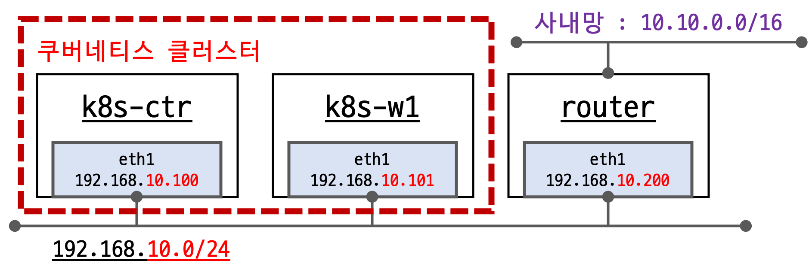
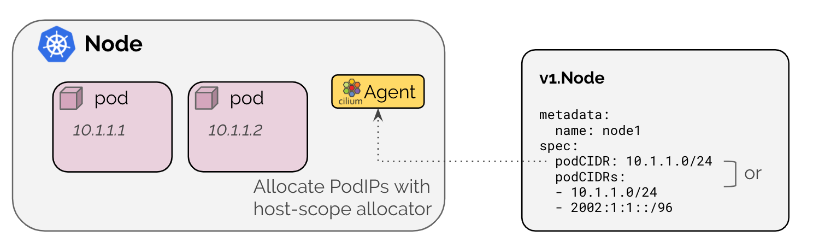
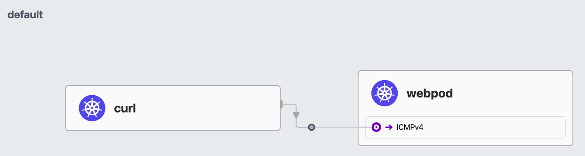
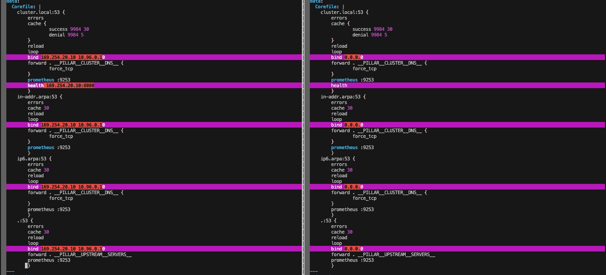
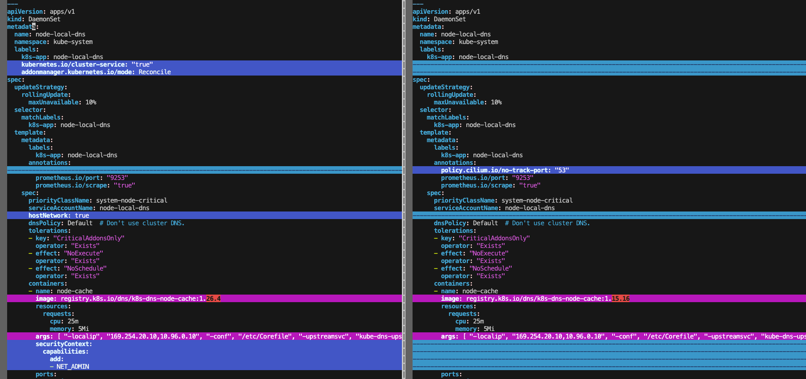
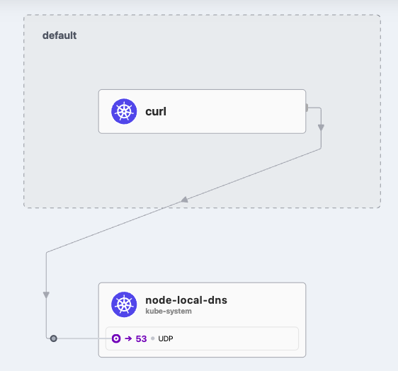

3주차 - Networking(노드에 파드들간 통신 상세 1)
- 실습 환경 구성
- 실습 환경 소개

- 기본 배포 가상 머신 : k8s-ctr, k8s-w1, router
- router : 사내망 10.10.0.0/16 대역 통신과 연결, k8s 에 join 되지 않은 서버, loop1/loop2 dump 인터페이스 배치
- Cilium CNI 설치 상태로 배포 완료됨
- 실습 환경 배포 파일 작성
Vagrantfile : 가상머신 정의, 부팅 시 초기 프로비저닝 설정
# Variables K8SV = '1.33.2-1.1' # Kubernetes Version : apt list -a kubelet , ex) 1.32.5-1.1 CONTAINERDV = '1.7.27-1' # Containerd Version : apt list -a containerd.io , ex) 1.6.33-1 CILIUMV = '1.17.6' # Cilium CNI Version : https://github.com/cilium/cilium/tags N = 1 # max number of worker nodes # Base Image https://portal.cloud.hashicorp.com/vagrant/discover/bento/ubuntu-24.04 BOX_IMAGE = "bento/ubuntu-24.04" BOX_VERSION = "202502.21.0" Vagrant.configure("2") do |config| #-ControlPlane Node config.vm.define "k8s-ctr" do |subconfig| subconfig.vm.box = BOX_IMAGE subconfig.vm.box_version = BOX_VERSION subconfig.vm.provider "virtualbox" do |vb| vb.customize ["modifyvm", :id, "--groups", "/Cilium-Lab"] vb.customize ["modifyvm", :id, "--nicpromisc2", "allow-all"] vb.name = "k8s-ctr" vb.cpus = 2 vb.memory = 2560 vb.linked_clone = true end subconfig.vm.host_name = "k8s-ctr" subconfig.vm.network "private_network", ip: "192.168.10.100" subconfig.vm.network "forwarded_port", guest: 22, host: 60000, auto_correct: true, id: "ssh" subconfig.vm.synced_folder "./", "/vagrant", disabled: true subconfig.vm.provision "shell", path: "init_cfg.sh", args: [ K8SV, CONTAINERDV ] subconfig.vm.provision "shell", path: "k8s-ctr.sh", args: [ N, CILIUMV, K8SV ] subconfig.vm.provision "shell", path: "route-add1.sh" end #-Worker Nodes Subnet1 (1..N).each do |i| config.vm.define "k8s-w#{i}" do |subconfig| subconfig.vm.box = BOX_IMAGE subconfig.vm.box_version = BOX_VERSION subconfig.vm.provider "virtualbox" do |vb| vb.customize ["modifyvm", :id, "--groups", "/Cilium-Lab"] vb.customize ["modifyvm", :id, "--nicpromisc2", "allow-all"] vb.name = "k8s-w#{i}" vb.cpus = 2 vb.memory = 1536 vb.linked_clone = true end subconfig.vm.host_name = "k8s-w#{i}" subconfig.vm.network "private_network", ip: "192.168.10.10#{i}" subconfig.vm.network "forwarded_port", guest: 22, host: "6000#{i}", auto_correct: true, id: "ssh" subconfig.vm.synced_folder "./", "/vagrant", disabled: true subconfig.vm.provision "shell", path: "init_cfg.sh", args: [ K8SV, CONTAINERDV] subconfig.vm.provision "shell", path: "k8s-w.sh" subconfig.vm.provision "shell", path: "route-add1.sh" end end #-Router Node config.vm.define "router" do |subconfig| subconfig.vm.box = BOX_IMAGE subconfig.vm.box_version = BOX_VERSION subconfig.vm.provider "virtualbox" do |vb| vb.customize ["modifyvm", :id, "--groups", "/Cilium-Lab"] vb.name = "router" vb.cpus = 1 vb.memory = 768 vb.linked_clone = true end subconfig.vm.host_name = "router" subconfig.vm.network "private_network", ip: "192.168.10.200" subconfig.vm.network "forwarded_port", guest: 22, host: 60009, auto_correct: true, id: "ssh" subconfig.vm.synced_folder "./", "/vagrant", disabled: true subconfig.vm.provision "shell", path: "router.sh" end end
init_cfg.sh : args 참고하여 설치
#!/usr/bin/env bash echo ">>>> Initial Config Start <<<<" echo "[TASK 1] Setting Profile & Bashrc" echo 'alias vi=vim' >> /etc/profile echo "sudo su -" >> /home/vagrant/.bashrc ln -sf /usr/share/zoneinfo/Asia/Seoul /etc/localtime # Change Timezone echo "[TASK 2] Disable AppArmor" systemctl stop ufw && systemctl disable ufw >/dev/null 2>&1 systemctl stop apparmor && systemctl disable apparmor >/dev/null 2>&1 echo "[TASK 3] Disable and turn off SWAP" swapoff -a && sed -i '/swap/s/^/#/' /etc/fstab echo "[TASK 4] Install Packages" apt update -qq >/dev/null 2>&1 apt-get install apt-transport-https ca-certificates curl gpg -y -qq >/dev/null 2>&1 # Download the public signing key for the Kubernetes package repositories. mkdir -p -m 755 /etc/apt/keyrings K8SMMV=$(echo $1 | sed -En 's/^([0-9]+\.[0-9]+)\..*/\1/p') curl -fsSL https://pkgs.k8s.io/core:/stable:/v$K8SMMV/deb/Release.key | sudo gpg --dearmor -o /etc/apt/keyrings/kubernetes-apt-keyring.gpg echo "deb [signed-by=/etc/apt/keyrings/kubernetes-apt-keyring.gpg] https://pkgs.k8s.io/core:/stable:/v$K8SMMV/deb/ /" >> /etc/apt/sources.list.d/kubernetes.list curl -fsSL https://download.docker.com/linux/ubuntu/gpg -o /etc/apt/keyrings/docker.asc echo "deb [arch=$(dpkg --print-architecture) signed-by=/etc/apt/keyrings/docker.asc] https://download.docker.com/linux/ubuntu $(. /etc/os-release && echo "$VERSION_CODENAME") stable" | tee /etc/apt/sources.list.d/docker.list > /dev/null # packets traversing the bridge are processed by iptables for filtering echo 1 > /proc/sys/net/ipv4/ip_forward echo "net.ipv4.ip_forward = 1" >> /etc/sysctl.d/k8s.conf # enable br_netfilter for iptables modprobe br_netfilter modprobe overlay echo "br_netfilter" >> /etc/modules-load.d/k8s.conf echo "overlay" >> /etc/modules-load.d/k8s.conf echo "[TASK 5] Install Kubernetes components (kubeadm, kubelet and kubectl)" # Update the apt package index, install kubelet, kubeadm and kubectl, and pin their version apt update >/dev/null 2>&1 # apt list -a kubelet ; apt list -a containerd.io apt-get install -y kubelet=$1 kubectl=$1 kubeadm=$1 containerd.io=$2 >/dev/null 2>&1 apt-mark hold kubelet kubeadm kubectl >/dev/null 2>&1 # containerd configure to default and cgroup managed by systemd containerd config default > /etc/containerd/config.toml sed -i 's/SystemdCgroup = false/SystemdCgroup = true/g' /etc/containerd/config.toml # avoid WARN&ERRO(default endpoints) when crictl run cat <<EOF > /etc/crictl.yaml runtime-endpoint: unix:///run/containerd/containerd.sock image-endpoint: unix:///run/containerd/containerd.sock EOF # ready to install for k8s systemctl restart containerd && systemctl enable containerd systemctl enable --now kubelet echo "[TASK 6] Install Packages & Helm" export DEBIAN_FRONTEND=noninteractive apt-get install -y bridge-utils sshpass net-tools conntrack ngrep tcpdump ipset arping wireguard jq yq tree bash-completion unzip kubecolor termshark >/dev/null 2>&1 curl -s https://raw.githubusercontent.com/helm/helm/master/scripts/get-helm-3 | bash >/dev/null 2>&1 echo ">>>> Initial Config End <<<<"
k8s-ctr.sh : kubeadm init, Cilium CNI 설치, 편리성 설정(k, kc)
kubeadm-init-ctr-config.yaml
apiVersion: kubeadm.k8s.io/v1beta4 kind: InitConfiguration bootstrapTokens: - token: "123456.1234567890123456" ttl: "0s" usages: - signing - authentication localAPIEndpoint: advertiseAddress: "192.168.10.100" nodeRegistration: kubeletExtraArgs: - name: node-ip value: "192.168.10.100" criSocket: "unix:///run/containerd/containerd.sock" --- apiVersion: kubeadm.k8s.io/v1beta4 kind: ClusterConfiguration kubernetesVersion: "K8S_VERSION_PLACEHOLDER" networking: podSubnet: "10.244.0.0/16" serviceSubnet: "10.96.0.0/16"
#!/usr/bin/env bash echo ">>>> K8S Controlplane config Start <<<<" echo "[TASK 1] Initial Kubernetes" curl --silent -o /root/kubeadm-init-ctr-config.yaml https://raw.githubusercontent.com/gasida/vagrant-lab/refs/heads/main/cilium-study/kubeadm-init-ctr-config.yaml K8SMMV=$(echo $3 | sed -En 's/^([0-9]+\.[0-9]+\.[0-9]+).*/\1/p') sed -i "s/K8S_VERSION_PLACEHOLDER/v${K8SMMV}/g" /root/kubeadm-init-ctr-config.yaml kubeadm init --config="/root/kubeadm-init-ctr-config.yaml" >/dev/null 2>&1 echo "[TASK 2] Setting kube config file" mkdir -p /root/.kube cp -i /etc/kubernetes/admin.conf /root/.kube/config chown $(id -u):$(id -g) /root/.kube/config echo "[TASK 3] Source the completion" echo 'source <(kubectl completion bash)' >> /etc/profile echo 'source <(kubeadm completion bash)' >> /etc/profile echo "[TASK 4] Alias kubectl to k" echo 'alias k=kubectl' >> /etc/profile echo 'alias kc=kubecolor' >> /etc/profile echo 'complete -F __start_kubectl k' >> /etc/profile echo "[TASK 5] Install Kubectx & Kubens" git clone https://github.com/ahmetb/kubectx /opt/kubectx >/dev/null 2>&1 ln -s /opt/kubectx/kubens /usr/local/bin/kubens ln -s /opt/kubectx/kubectx /usr/local/bin/kubectx echo "[TASK 6] Install Kubeps & Setting PS1" git clone https://github.com/jonmosco/kube-ps1.git /root/kube-ps1 >/dev/null 2>&1 cat <<"EOT" >> /root/.bash_profile source /root/kube-ps1/kube-ps1.sh KUBE_PS1_SYMBOL_ENABLE=true function get_cluster_short() { echo "$1" | cut -d . -f1 } KUBE_PS1_CLUSTER_FUNCTION=get_cluster_short KUBE_PS1_SUFFIX=') ' PS1='$(kube_ps1)'$PS1 EOT kubectl config rename-context "kubernetes-admin@kubernetes" "HomeLab" >/dev/null 2>&1 echo "[TASK 7] Install Cilium CNI" NODEIP=$(ip -4 addr show eth1 | grep -oP '(?<=inet\s)\d+(\.\d+){3}') helm repo add cilium https://helm.cilium.io/ >/dev/null 2>&1 helm repo update >/dev/null 2>&1 helm install cilium cilium/cilium --version $2 --namespace kube-system \ --set k8sServiceHost=192.168.10.100 --set k8sServicePort=6443 \ --set ipam.mode="kubernetes" --set k8s.requireIPv4PodCIDR=true --set ipv4NativeRoutingCIDR=10.244.0.0/16 \ --set routingMode=native --set autoDirectNodeRoutes=true --set endpointRoutes.enabled=true \ --set kubeProxyReplacement=true --set bpf.masquerade=true --set installNoConntrackIptablesRules=true \ --set endpointHealthChecking.enabled=false --set healthChecking=false \ --set hubble.enabled=true --set hubble.relay.enabled=true --set hubble.ui.enabled=true \ --set hubble.ui.service.type=NodePort --set hubble.ui.service.nodePort=30003 \ --set prometheus.enabled=true --set operator.prometheus.enabled=true --set hubble.metrics.enableOpenMetrics=true \ --set hubble.metrics.enabled="{dns,drop,tcp,flow,port-distribution,icmp,httpV2:exemplars=true;labelsContext=source_ip\,source_namespace\,source_workload\,destination_ip\,destination_namespace\,destination_workload\,traffic_direction}" \ --set operator.replicas=1 --set debug.enabled=true >/dev/null 2>&1 #--set ipam.mode="cluster-pool" --set ipam.operator.clusterPoolIPv4PodCIDRList={"172.20.0.0/16"} --set ipv4NativeRoutingCIDR=172.20.0.0/16 \ echo "[TASK 8] Install Cilium / Hubble CLI" CILIUM_CLI_VERSION=$(curl -s https://raw.githubusercontent.com/cilium/cilium-cli/main/stable.txt) CLI_ARCH=amd64 if [ "$(uname -m)" = "aarch64" ]; then CLI_ARCH=arm64; fi curl -L --fail --remote-name-all https://github.com/cilium/cilium-cli/releases/download/${CILIUM_CLI_VERSION}/cilium-linux-${CLI_ARCH}.tar.gz >/dev/null 2>&1 tar xzvfC cilium-linux-${CLI_ARCH}.tar.gz /usr/local/bin rm cilium-linux-${CLI_ARCH}.tar.gz HUBBLE_VERSION=$(curl -s https://raw.githubusercontent.com/cilium/hubble/master/stable.txt) HUBBLE_ARCH=amd64 if [ "$(uname -m)" = "aarch64" ]; then HUBBLE_ARCH=arm64; fi curl -L --fail --remote-name-all https://github.com/cilium/hubble/releases/download/$HUBBLE_VERSION/hubble-linux-${HUBBLE_ARCH}.tar.gz >/dev/null 2>&1 tar xzvfC hubble-linux-${HUBBLE_ARCH}.tar.gz /usr/local/bin rm hubble-linux-${HUBBLE_ARCH}.tar.gz echo "[TASK 9] Remove node taint" kubectl taint nodes k8s-ctr node-role.kubernetes.io/control-plane- echo "[TASK 10] local DNS with hosts file" echo "192.168.10.100 k8s-ctr" >> /etc/hosts for (( i=1; i<=$1; i++ )); do echo "192.168.10.10$i k8s-w$i" >> /etc/hosts; done echo "[TASK 11] Install Prometheus & Grafana" kubectl apply -f https://raw.githubusercontent.com/cilium/cilium/1.17.6/examples/kubernetes/addons/prometheus/monitoring-example.yaml >/dev/null 2>&1 kubectl patch svc -n cilium-monitoring prometheus -p '{"spec": {"type": "NodePort", "ports": [{"port": 9090, "targetPort": 9090, "nodePort": 30001}]}}' >/dev/null 2>&1 kubectl patch svc -n cilium-monitoring grafana -p '{"spec": {"type": "NodePort", "ports": [{"port": 3000, "targetPort": 3000, "nodePort": 30002}]}}' >/dev/null 2>&1 echo "[TASK 12] Dynamically provisioning persistent local storage with Kubernetes" kubectl apply -f https://raw.githubusercontent.com/rancher/local-path-provisioner/v0.0.31/deploy/local-path-storage.yaml >/dev/null 2>&1 kubectl patch storageclass local-path -p '{"metadata": {"annotations":{"storageclass.kubernetes.io/is-default-class":"true"}}}' >/dev/null 2>&1 echo ">>>> K8S Controlplane Config End <<<<"--set endpointHealthChecking.enabled=falseand --set healthChecking=falsedisable endpoint health checking entirely.
- However it is recommended that those features be enabled initially on a smaller cluster (3-10 nodes) where it can be used to detect potential packet loss due to firewall rules or hypervisor settings. - Docs
k8s-w.sh : kubeadm join
kubeadm-join-worker-config.yaml
apiVersion: kubeadm.k8s.io/v1beta4 kind: JoinConfiguration discovery: bootstrapToken: token: "123456.1234567890123456" apiServerEndpoint: "192.168.10.100:6443" unsafeSkipCAVerification: true nodeRegistration: criSocket: "unix:///run/containerd/containerd.sock" kubeletExtraArgs: - name: node-ip value: "NODE_IP_PLACEHOLDER"
#!/usr/bin/env bash echo ">>>> K8S Node config Start <<<<" echo "[TASK 1] K8S Controlplane Join" curl --silent -o /root/kubeadm-join-worker-config.yaml https://raw.githubusercontent.com/gasida/vagrant-lab/refs/heads/main/cilium-study/2w/kubeadm-join-worker-config.yaml NODEIP=$(ip -4 addr show eth1 | grep -oP '(?<=inet\s)\d+(\.\d+){3}') sed -i "s/NODE_IP_PLACEHOLDER/${NODEIP}/g" /root/kubeadm-join-worker-config.yaml kubeadm join --config="/root/kubeadm-join-worker-config.yaml" > /dev/null 2>&1 echo ">>>> K8S Node config End <<<<"
route-add1.sh : k8s node 들이 사내망(?)과 통신을 위한 route 설정
#!/usr/bin/env bash echo ">>>> Route Add Config Start <<<<" chmod 600 /etc/netplan/01-netcfg.yaml chmod 600 /etc/netplan/50-vagrant.yaml cat <<EOT>> /etc/netplan/50-vagrant.yaml routes: - to: 10.10.0.0/16 via: 192.168.10.200 EOT netplan apply echo ">>>> Route Add Config End <<<<"
router.sh : router 역할의 (웹) 서버
#!/usr/bin/env bash echo ">>>> Initial Config Start <<<<" echo "[TASK 1] Setting Profile & Bashrc" echo 'alias vi=vim' >> /etc/profile echo "sudo su -" >> /home/vagrant/.bashrc ln -sf /usr/share/zoneinfo/Asia/Seoul /etc/localtime echo "[TASK 2] Disable AppArmor" systemctl stop ufw && systemctl disable ufw >/dev/null 2>&1 systemctl stop apparmor && systemctl disable apparmor >/dev/null 2>&1 echo "[TASK 3] Add Kernel setting - IP Forwarding" sed -i 's/#net.ipv4.ip_forward=1/net.ipv4.ip_forward=1/g' /etc/sysctl.conf sysctl -p >/dev/null 2>&1 echo "[TASK 4] Setting Dummy Interface" modprobe dummy ip link add loop1 type dummy ip link set loop1 up ip addr add 10.10.1.200/24 dev loop1 ip link add loop2 type dummy ip link set loop2 up ip addr add 10.10.2.200/24 dev loop2 echo "[TASK 5] Install Packages" export DEBIAN_FRONTEND=noninteractive apt update -qq >/dev/null 2>&1 apt-get install net-tools jq tree ngrep tcpdump arping -y -qq >/dev/null 2>&1 echo "[TASK 6] Install Apache" apt install apache2 -y >/dev/null 2>&1 echo -e "<h1>Web Server : $(hostname)</h1>" > /var/www/html/index.html echo ">>>> Initial Config End <<<<"
mkdir cilium-lab && cd cilium-lab curl -O https://raw.githubusercontent.com/gasida/vagrant-lab/refs/heads/main/cilium-study/3w/Vagrantfile vagrant up
실습 환경 배포 :
vagrant up- [k8s-ctr] 접속 후 기본 정보 확인
# cat /etc/hosts sshpass -p 'vagrant' ssh -o StrictHostKeyChecking=no vagrant@k8s-w1 hostname # ifconfig | grep -iEA1 'eth[0-9]:' # 클러스터 정보 확인 kubectl cluster-info kubectl cluster-info dump | grep -m 2 -E "cluster-cidr|service-cluster-ip-range" "--service-cluster-ip-range=10.96.0.0/16", "--cluster-cidr=10.244.0.0/16", kubectl describe cm -n kube-system kubeadm-config kubectl describe cm -n kube-system kubelet-config # 노드 정보 : 상태, INTERNAL-IP 확인 kubectl get node -owide # 파드 정보 : 상태, 파드 IP 확인 kubectl get nodes -o jsonpath='{range .items[*]}{.metadata.name}{"\t"}{.spec.podCIDR}{"\n"}{end}' kubectl get ciliumnode -o json | grep podCIDRs -A2 kubectl get pod -A -owide # ipam 모드 확인 cilium config view | grep ^ipam ipam kubernetes # iptables 확인 iptables-save iptables -t nat -S iptables -t filter -S iptables -t mangle -S iptables -t raw -S
- [k8s-ctr] cilium 설치 정보 확인
# cilium 상태 확인 kubectl get cm -n kube-system cilium-config -o json | jq cilium status cilium config view # kubectl exec -n kube-system -c cilium-agent -it ds/cilium -- cilium-dbg status --verbose kubectl exec -n kube-system -c cilium-agent -it ds/cilium -- cilium-dbg metrics list # kubectl get ciliumendpoints -A # monitor kubectl exec -n kube-system -c cilium-agent -it ds/cilium -- cilium-dbg monitor kubectl exec -n kube-system -c cilium-agent -it ds/cilium -- cilium-dbg monitor -v kubectl exec -n kube-system -c cilium-agent -it ds/cilium -- cilium-dbg monitor -v -v ## Filter for only the events related to endpoint kubectl exec -n kube-system -c cilium-agent -it ds/cilium -- cilium-dbg monitor --related-to=<id> ## Show notifications only for dropped packet events kubectl exec -n kube-system -c cilium-agent -it ds/cilium -- cilium-dbg monitor --type drop ## Don’t dissect packet payload, display payload in hex information kubectl exec -n kube-system -c cilium-agent -it ds/cilium -- cilium-dbg monitor -v -v --hex ## Layer7 kubectl exec -n kube-system -c cilium-agent -it ds/cilium -- cilium-dbg monitor -v --type l7
- [k8s-ctr] 접속 후 기본 정보 확인
k9s : Kubernetes CLI To Manage Your Clusters In Style! - Github
- 설치
# arm64 CPU wget https://github.com/derailed/k9s/releases/latest/download/k9s_linux_arm64.deb -O /tmp/k9s_linux_arm64.deb apt install /tmp/k9s_linux_arm64.deb # amd64 CPU wget https://github.com/derailed/k9s/releases/latest/download/k9s_linux_amd64.deb -O /tmp/k9s_linux_amd64.deb apt install /tmp/k9s_linux_amd64.deb # which k9s
- The Command Line https://peterica.tistory.com/276
# List current version k9s version # To get info about K9s runtime (logs, configs, etc..) k9s info # List all available CLI options k9s help # To run K9s in a given namespace k9s -n mycoolns # Start K9s in an existing KubeConfig context k9s --context coolCtx # Start K9s in readonly mode - with all cluster modification commands disabled k9s --readonly
- Key Bindings
Action Command Comment Show active keyboard mnemonics and help ?Show all available resource alias ctrl-aTo bail out of K9s :quit,:q,ctrl-cTo go up/back to the previous view escIf you have crumbs on, this will go to the previous one View a Kubernetes resource using singular/plural or short-name :pod⏎accepts singular, plural, short-name or alias ie pod or pods View a Kubernetes resource in a given namespace :pod ns-x⏎View filtered pods (New v0.30.0!) :pod /fred⏎View all pods filtered by fred View labeled pods (New v0.30.0!) :pod app=fred,env=dev⏎View all pods with labels matching app=fred and env=dev View pods in a given context (New v0.30.0!) :pod @ctx1⏎View all pods in context ctx1. Switches out your current k9s context! Filter out a resource view given a filter /filter⏎Regex2 supported ie `fred Inverse regex filter /! filter⏎Keep everything that doesn't match. Filter resource view by labels /-l label-selector⏎Fuzzy find a resource given a filter /-f filter⏎Bails out of view/command/filter mode <esc>Key mapping to describe, view, edit, view logs,... d,v,e,l,...To view and switch to another Kubernetes context (Pod view) :ctx⏎To view and switch directly to another Kubernetes context (Last used view) :ctx context-name⏎To view and switch to another Kubernetes namespace :ns⏎To switch back to the last active command (like how "cd -" works) -Navigation that adds breadcrumbs to the bottom are not commands To go back and forward through the command history back: [, forward:]Same as above To view all saved resources :screendump or sd⏎To delete a resource (TAB and ENTER to confirm) ctrl-dTo kill a resource (no confirmation dialog, equivalent to kubectl delete --now) ctrl-kLaunch pulses view :pulses or pu⏎Launch XRay view :xray RESOURCE [NAMESPACE]⏎RESOURCE can be one of po, svc, dp, rs, sts, ds, NAMESPACE is optional Launch Popeye view :popeye or pop⏎See popeye
- 설치
- 실습 환경 소개
{kind=link}
- IPAM
IP Address Management : 네트워크 엔드포인트(컨테이너, 등)에 대한 IP 할당과 관리 - Docs
Feature Kubernetes Host Scope Cluster Scope (default) Multi-Pool (Beta) CRD-backed AWS ENI… Tunnel routing ✅ ✅ ❌ ❌ ❌ Direct routing ✅ ✅ ✅ ✅ ✅ CIDR Configuration Kubernetes Cilium Cilium External External (AWS) Multiple CIDRs per cluster ❌ ✅ ✅ N/A N/A Multiple CIDRs per node ❌ ❌ ✅ N/A N/A Dynamic CIDR/IP allocation ❌ ❌ ✅ ✅ ✅ 🚫기존 클러스터의 IPAM 모드를 변경하지 마세요.
라이브 환경에서 IPAM 모드를 변경하면 기존 워크로드의
지속적인 연결 중단이 발생할 수 있습니다.
IPAM 모드를 변경하는 가장 안전한 방법은 새로운 IPAM 구성으로 새로운 Kubernetes 클러스터를 설치하는 것입니다.1.1. Kubernetes Host Scope : - Docs

- Kubernetes 호스트 범위 IPAM 모드는
ipam: Kubernetes에서 활성화되며 클러스터의 각 개별 노드에 주소 할당을 위임합니다.
- IP는 Kubernetes에 의해 각 노드에 연결된 PodCIDR 범위에서 할당됩니다.
- 이 모드에서는 Cilium 에이전트가
Kubernetes v1.Node객체를 통해 PodCIDR 범위가 다음 방법 중 하나를 통해 활성화된 모든 주소 패밀리에 대해 제공될 때까지 시작 시 대기합니다:
# 클러스터 정보 확인 kubectl cluster-info dump | grep -m 2 -E "cluster-cidr|service-cluster-ip-range" "--service-cluster-ip-range=10.96.0.0/16", "--cluster-cidr=10.244.0.0/16", # ipam 모드 확인 cilium config view | grep ^ipam ipam kubernetes # 노드별 파드에 할당되는 IPAM(PodCIDR) 정보 확인 # --allocate-node-cidrs=true 로 설정된 kube-controller-manager에서 CIDR을 자동 할당함 kubectl get nodes -o jsonpath='{range .items[*]}{.metadata.name}{"\t"}{.spec.podCIDR}{"\n"}{end}' k8s-ctr 10.244.0.0/24 k8s-w1 10.244.1.0/24 kc describe pod -n kube-system kube-controller-manager-k8s-ctr ... Command: kube-controller-manager --allocate-node-cidrs=true --cluster-cidr=10.244.0.0/16 --service-cluster-ip-range=10.96.0.0/16 ... kubectl get ciliumnode -o json | grep podCIDRs -A2 "podCIDRs": [ "10.244.0.0/24" ], -- "podCIDRs": [ "10.244.1.0/24" ], # 파드 정보 : 상태, 파드 IP 확인 kubectl get ciliumendpoints.cilium.io -A cilium-monitoring grafana-5c69859d9-b9mzw 1271 ready 10.244.0.83 cilium-monitoring prometheus-6fc896bc5d-c2f6v 34516 ready 10.244.0.163 kube-system coredns-674b8bbfcf-78dqv 4716 ready 10.244.0.174 kube-system coredns-674b8bbfcf-sc2zb 4716 ready 10.244.0.6 kube-system hubble-relay-5dcd46f5c-4h6q9 15218 ready 10.244.0.140 kube-system hubble-ui-76d4965bb6-plc4v 65409 ready 10.244.0.229 local-path-storage local-path-provisioner-74f9666bc9-588kd 566 ready 10.244.0.125- Kubernetes 호스트 범위 IPAM 모드는
1.2. 샘플 애플리케이션 배포 및 확인 & Termshark
- 샘플 애플리케이션 배포
# 샘플 애플리케이션 배포 cat << EOF | kubectl apply -f - apiVersion: apps/v1 kind: Deployment metadata: name: webpod spec: replicas: 2 selector: matchLabels: app: webpod template: metadata: labels: app: webpod spec: affinity: podAntiAffinity: requiredDuringSchedulingIgnoredDuringExecution: - labelSelector: matchExpressions: - key: app operator: In values: - sample-app topologyKey: "kubernetes.io/hostname" containers: - name: webpod image: traefik/whoami ports: - containerPort: 80 --- apiVersion: v1 kind: Service metadata: name: webpod labels: app: webpod spec: selector: app: webpod ports: - protocol: TCP port: 80 targetPort: 80 type: ClusterIP EOF # k8s-ctr 노드에 curl-pod 파드 배포 cat <<EOF | kubectl apply -f - apiVersion: v1 kind: Pod metadata: name: curl-pod labels: app: curl spec: nodeName: k8s-ctr containers: - name: curl image: nicolaka/netshoot command: ["tail"] args: ["-f", "/dev/null"] terminationGracePeriodSeconds: 0 EOF
- 확인
# 배포 확인 kubectl get deploy,svc,ep webpod -owide NAME READY UP-TO-DATE AVAILABLE AGE CONTAINERS IMAGES SELECTOR deployment.apps/webpod 2/2 2 2 9s webpod traefik/whoami app=webpod NAME TYPE CLUSTER-IP EXTERNAL-IP PORT(S) AGE SELECTOR service/webpod ClusterIP 10.96.94.243 <none> 80/TCP 9s app=webpod NAME ENDPOINTS AGE endpoints/webpod 10.244.0.129:80,10.244.1.45:80 9s kubectl get endpointslices -l app=webpod NAME ADDRESSTYPE PORTS ENDPOINTS AGE webpod-7zvds IPv4 80 10.244.0.129,10.244.1.45 22s kubectl get ciliumendpoints # IP 확인 NAME SECURITY IDENTITY ENDPOINT STATE IPV4 IPV6 curl-pod 61901 ready 10.244.0.230 webpod-697b545f57-4sp7g 6287 ready 10.244.1.45 webpod-697b545f57-vnp72 6287 ready 10.244.0.129 kubectl exec -it -n kube-system ds/cilium -c cilium-agent -- cilium-dbg endpoint list # 통신 확인 kubectl exec -it curl-pod -- curl webpod | grep Hostname kubectl exec -it curl-pod -- sh -c 'while true; do curl -s webpod | grep Hostname; sleep 1; done'
- hubble 확인
# hubble ui 웹 접속 주소 확인 : default 네임스페이스 확인 NODEIP=$(ip -4 addr show eth1 | grep -oP '(?<=inet\s)\d+(\.\d+){3}') echo -e "http://$NODEIP:30003" # hubble relay 포트 포워딩 실행 cilium hubble port-forward& hubble status # flow log 모니터링 hubble observe -f --protocol tcp --to-pod curl-pod hubble observe -f --protocol tcp --from-pod curl-pod hubble observe -f --protocol tcp --pod curl-pod Aug 1 14:53:54.110: default/curl-pod (ID:61901) <> 10.96.94.243:80 (world) pre-xlate-fwd TRACED (TCP) Aug 1 14:53:54.110: default/curl-pod (ID:61901) <> default/webpod-697b545f57-4sp7g:80 (ID:6287) post-xlate-fwd TRANSLATED (TCP) Aug 1 14:53:54.110: default/curl-pod:51104 (ID:61901) -> default/webpod-697b545f57-4sp7g:80 (ID:6287) to-network FORWARDED (TCP Flags: SYN) Aug 1 14:53:54.111: default/curl-pod:51104 (ID:61901) <- default/webpod-697b545f57-4sp7g:80 (ID:6287) to-endpoint FORWARDED (TCP Flags: SYN, ACK) Aug 1 14:53:54.111: default/curl-pod:51104 (ID:61901) -> default/webpod-697b545f57-4sp7g:80 (ID:6287) to-network FORWARDED (TCP Flags: ACK) Aug 1 14:53:54.111: default/curl-pod:51104 (ID:61901) -> default/webpod-697b545f57-4sp7g:80 (ID:6287) to-network FORWARDED (TCP Flags: ACK, PSH) Aug 1 14:53:54.113: default/curl-pod:51104 (ID:61901) <- default/webpod-697b545f57-4sp7g:80 (ID:6287) to-endpoint FORWARDED (TCP Flags: ACK, PSH) Aug 1 14:53:54.113: default/curl-pod:51104 (ID:61901) -> default/webpod-697b545f57-4sp7g:80 (ID:6287) to-network FORWARDED (TCP Flags: ACK, FIN) Aug 1 14:53:54.113: default/curl-pod:51104 (ID:61901) <- default/webpod-697b545f57-4sp7g:80 (ID:6287) to-endpoint FORWARDED (TCP Flags: ACK, FIN) Aug 1 14:53:54.113: default/curl-pod:51104 (ID:61901) -> default/webpod-697b545f57-4sp7g:80 (ID:6287) to-network FORWARDED (TCP Flags: ACK) pre-xlate-fwd , TRACED : NAT (IP 변환) 전 , 추적 중인 flow post-xlate-fwd , TRANSLATED : NAT 후의 흐름 , NAT 변환이 일어났음 => 즉 webpod의 service ip(=10.96.94.243)에서 pod ip로 NAT되어(=Translated) pod ip로 직접 통신한다! # 호출 시도 kubectl exec -it curl-pod -- curl webpod | grep Hostname kubectl exec -it curl-pod -- curl webpod | grep Hostname 혹은 kubectl exec -it curl-pod -- sh -c 'while true; do curl -s webpod | grep Hostname; sleep 1; done' # tcpdump 확인 : 파드 IP 확인 tcpdump -i eth1 tcp port 80 -nn 23:56:58.353949 IP 10.244.0.230.52528 > 10.244.1.45.80: Flags [S], seq 3909789388, win 64240, options [mss 1460,sackOK,TS val 2486238173 ecr 0,nop,wscale 7], length 0 23:56:58.354424 IP 10.244.1.45.80 > 10.244.0.230.52528: Flags [S.], seq 1351463523, ack 3909789389, win 65160, options [mss 1460,sackOK,TS val 1881769521 ecr 2486238173,nop,wscale 7], length 0 # tcpdump -i eth1 tcp port 80 -w /tmp/http.pcap # termshark -r /tmp/http.pcap
- 샘플 애플리케이션 배포
1.3. [Cilium] Cluster Scope & 마이그레이션 실습 - Docs , IPAM

- 클러스터 범위 IPAM 모드는 각 노드에 노드별 PodCIDR을 할당하고 각 노드에 호스트 범위 할당기를 사용하여 IP를 할당합니다.
- 따라서 이 모드는 Kubernetes 호스트 범위 모드와 유사합니다.
- 차이점은 Kubernetes가
Kubernetes v1.Node리소스를 통해 노드별 PodCIDR을 할당하는 대신, Cilium 운영자가v2.CiliumNode리소스(CRD)를 통해 노드별 PodCIDR을 관리한다는 점입니다.
- 이 모드의 장점은 Kubernetes가 노드별 PodCIDR을 나눠주도록 구성되는 것에 의존하지 않는다는 점입니다.
- 최소 마스크 길이는 /30이며 권장 최소 마스크 길이는 /29 이상입니다. 2개 주소는 예약됨(네트워크, 브로드캐스트 주소)
10.0.0.0/8is the default pod CIDR.clusterPoolIPv4PodCIDRList
# 반복 요청 해두기 kubectl exec -it curl-pod -- sh -c 'while true; do curl -s webpod | grep Hostname; sleep 1; done' # Cluster Scopre 로 설정 변경 helm upgrade cilium cilium/cilium --namespace kube-system --reuse-values \ --set ipam.mode="cluster-pool" --set ipam.operator.clusterPoolIPv4PodCIDRList={"172.20.0.0/16"} --set ipv4NativeRoutingCIDR=172.20.0.0/16 kubectl -n kube-system rollout restart deploy/cilium-operator # 오퍼레이터 재시작 필요 kubectl -n kube-system rollout restart ds/cilium # 변경 확인 kubectl get nodes -o jsonpath='{range .items[*]}{.metadata.name}{"\t"}{.spec.podCIDR}{"\n"}{end}' k8s-ctr 10.244.0.0/24 k8s-w1 10.244.1.0/24 cilium config view | grep ^ipam ipam cluster-pool ipam-cilium-node-update-rate 15s # ipam의 podCIDR이 아직 변경되지 않았다. kubectl get ciliumnode -o json | grep podCIDRs -A2 "podCIDRs": [ "10.244.0.0/24" ], -- "podCIDRs": [ "10.244.1.0/24" ], # 아직 ipam이 안바뀌어서 pod ip cidr이 그대로이다. kubectl get ciliumendpoints.cilium.io -A NAMESPACE NAME SECURITY IDENTITY ENDPOINT STATE IPV4 IPV6 cilium-monitoring grafana-5c69859d9-b9mzw 1271 ready 10.244.0.83 cilium-monitoring prometheus-6fc896bc5d-c2f6v 34516 ready 10.244.0.163 default curl-pod 61901 ready 10.244.0.230 default webpod-697b545f57-4sp7g 6287 ready 10.244.1.45 default webpod-697b545f57-vnp72 6287 ready 10.244.0.129 kube-system coredns-674b8bbfcf-78dqv 4716 ready 10.244.0.174 kube-system coredns-674b8bbfcf-sc2zb 4716 ready 10.244.0.6 kube-system hubble-relay-5b48c999f9-8qd8b 15218 ready 10.244.1.112 kube-system hubble-ui-655f947f96-8gh88 65409 ready 10.244.1.206 local-path-storage local-path-provisioner-74f9666bc9-588kd 566 ready 10.244.0.125 # 새로운 podCIDR이 할당되도록 설정해보자 kubectl delete ciliumnode k8s-w1 kubectl -n kube-system rollout restart ds/cilium kubectl get ciliumnode -o json | grep podCIDRs -A2 "podCIDRs": [ "10.244.0.0/24" ], -- "podCIDRs": [ "172.20.0.0/24" # k8s-w1에 할당되는 podCIDR이 변경되었다! ], # k8s-w1의 podCIDR은 변경되었지만, 이전에 배포한 pod는 아직 이전의 podCIDR로 남아있다. kubectl get ciliumendpoints.cilium.io -A NAMESPACE NAME SECURITY IDENTITY ENDPOINT STATE IPV4 IPV6 cilium-monitoring grafana-5c69859d9-b9mzw 1271 ready 10.244.0.83 cilium-monitoring prometheus-6fc896bc5d-c2f6v 34516 ready 10.244.0.163 default curl-pod 61901 ready 10.244.0.230 default webpod-697b545f57-vnp72 6287 ready 10.244.0.129 kube-system coredns-674b8bbfcf-78dqv 4716 ready 10.244.0.174 kube-system coredns-674b8bbfcf-sc2zb 4716 ready 10.244.0.6 local-path-storage local-path-provisioner-74f9666bc9-588kd 566 ready 10.244.0.125 # k8s-ctr nodedp 새로운 podCIDR이 할당되도록 설정해보자 kubectl delete ciliumnode k8s-ctr kubectl -n kube-system rollout restart ds/cilium kubectl get ciliumnode -o json | grep podCIDRs -A2 "podCIDRs": [ "172.20.1.0/24" # k8s-ctr node의 pod CIDR도 변경되었다 ], -- "podCIDRs": [ "172.20.0.0/24" ], kubectl get ciliumendpoints.cilium.io -A # 파드 IP 변경 되는가? -> 재시작된 coredns만 새롭게 ip를 할당받았다. NAMESPACE NAME SECURITY IDENTITY ENDPOINT STATE IPV4 IPV6 kube-system coredns-674b8bbfcf-8v9kl 4716 ready 172.20.1.199 kube-system coredns-674b8bbfcf-thvv7 4716 ready 172.20.0.82 # 노드의 poccidr static routing 자동 변경 적용 확인 ip -c route sshpass -p 'vagrant' ssh vagrant@k8s-w1 ip -c route cat # 직접 rollout restart 하자! kubectl get pod -A -owide | grep 10.244. kubectl -n kube-system rollout restart deploy/hubble-relay deploy/hubble-ui kubectl -n cilium-monitoring rollout restart deploy/prometheus deploy/grafana kubectl rollout restart deploy/webpod kubectl delete pod curl-pod # cilium hubble port-forward& # k8s-ctr 노드에 curl-pod 파드 배포 cat <<EOF | kubectl apply -f - apiVersion: v1 kind: Pod metadata: name: curl-pod labels: app: curl spec: nodeName: k8s-ctr containers: - name: curl image: nicolaka/netshoot command: ["tail"] args: ["-f", "/dev/null"] terminationGracePeriodSeconds: 0 EOF # 파드 IP 변경 확인! kubectl get ciliumendpoints.cilium.io -A NAMESPACE NAME SECURITY IDENTITY ENDPOINT STATE IPV4 IPV6 cilium-monitoring grafana-9859cc786-5shwp 1271 ready 172.20.0.57 cilium-monitoring prometheus-5676558d89-rb98b 34516 ready 172.20.0.33 default curl-pod 61901 ready 172.20.1.180 default webpod-bbd747f7f-d2nfd 6287 ready 172.20.0.130 default webpod-bbd747f7f-vqtjw 6287 ready 172.20.1.200 kube-system coredns-674b8bbfcf-8v9kl 4716 ready 172.20.1.199 kube-system coredns-674b8bbfcf-thvv7 4716 ready 172.20.0.82 kube-system hubble-relay-645c65c8b8-8758g 15218 ready 172.20.0.254 kube-system hubble-ui-558549c8f9-d2bk4 65409 ready 172.20.0.35 local-path-storage local-path-provisioner-97dbc9444-g8w7q 566 ready 172.20.0.118 # 반복 요청 kubectl exec -it curl-pod -- sh -c 'while true; do curl -s webpod | grep Hostname; sleep 1; done' # ip 확인 tcpdump -i eth1 tcp port 80 -nnnn tcpdump: verbose output suppressed, use -v[v]... for full protocol decode listening on eth1, link-type EN10MB (Ethernet), snapshot length 262144 bytes 00:20:23.335120 IP 172.20.1.180.40806 > 172.20.0.130.80: Flags [S], seq 2748968641, win 64240, options [mss 1460,sackOK,TS val 412433642 ecr 0,nop,wscale 7], length 0 00:20:23.335469 IP 172.20.0.130.80 > 172.20.1.180.40806: Flags [S.], seq 3482963688, ack 2748968642, win 65160, options [mss 1460,sackOK,TS val 1066904916 ecr 412433642,nop,wscale 7], length 0 ...
1.4. [Cilium CNI Chaining] AWS VPC CNI plugin - Docs

- 이 가이드는 Cilium을 AWS VPC CNI 플러그인과 결합하여 설정하는 방법을 설명합니다.
- 이 하이브리드 모드에서는 AWS VPC CNI 플러그인이 가상 네트워크 장치 설정뿐만 아니라 ENI를 통한 IP 주소 관리(IPAM)도 담당합니다.
- 주어진 포드에 대해 초기 네트워킹이 설정된 후, Cilium CNI 플러그인은 네트워크 정책을 시행하고 로드 밸런싱을 수행하며 암호화를 제공하기 위해 AWS VPC CNI 플러그인이 설정한 네트워크 장치에 eBPF 프로그램을 연결하도록 호출됩니다.

- AWS-CNI 역할 : Device plumbing, IPAM(ENI), Routing(Native-Routing 등)
- Cilium 역할 : LB, Network Policy, Encrption, Multi-Cluster, Visiblity
- AWS CNI Chaining mode로 Cilium 설치하기
- EKS Node 확인 및 webpod / curl-pod 설치
kubectl get nodes NAME STATUS ROLES AGE VERSION ip-192-168-38-187.ap-northeast-2.compute.internal Ready <none> 5h3m v1.31.5-eks-5d632ec ip-192-168-7-212.ap-northeast-2.compute.internal Ready <none> 5h3m v1.31.5-eks-5d632ec cat << EOF | kubectl apply -f - apiVersion: apps/v1 kind: Deployment metadata: name: webpod spec: replicas: 2 selector: matchLabels: app: webpod template: metadata: labels: app: webpod spec: affinity: podAntiAffinity: requiredDuringSchedulingIgnoredDuringExecution: - labelSelector: matchExpressions: - key: app operator: In values: - sample-app topologyKey: "kubernetes.io/hostname" containers: - name: webpod image: traefik/whoami ports: - containerPort: 80 --- apiVersion: v1 kind: Service metadata: name: webpod labels: app: webpod spec: selector: app: webpod ports: - protocol: TCP port: 80 targetPort: 80 type: ClusterIP EOF # k8s-ctr 노드에 curl-pod 파드 배포 cat <<EOF | kubectl apply -f - apiVersion: v1 kind: Pod metadata: name: curl-pod labels: app: curl spec: nodeName: k8s-ctr containers: - name: curl image: nicolaka/netshoot command: ["tail"] args: ["-f", "/dev/null"] terminationGracePeriodSeconds: 0 EOF
- 기존 kube-proxy를 사용하는 iptables 확인
kubectl get po -o wide NAME READY STATUS RESTARTS AGE IP NODE NOMINATED NODE READINESS GATES curl-pod 1/1 Running 0 15s 192.168.59.99 ip-192-168-38-187.ap-northeast-2.compute.internal <none> <none> webpod-697b545f57-grlbt 1/1 Running 0 83s 192.168.2.158 ip-192-168-7-212.ap-northeast-2.compute.internal <none> <none> webpod-697b545f57-ndqxp 1/1 Running 0 84s 192.168.59.98 ip-192-168-38-187.ap-northeast-2.compute.internal <none> <none> kubectl get svc -o wide NAME TYPE CLUSTER-IP EXTERNAL-IP PORT(S) AGE SELECTOR kubernetes ClusterIP 10.100.0.1 <none> 443/TCP 235d <none> webpod ClusterIP 10.100.239.191 <none> 80/TCP 5m15s app=webpod # kube-proxy iptables mode사용시 아래와 같이 service와 pod관련 nat를 위한 rule이 추가되고, iptable에 의해서 traffic이 routing됨. iptables -t nat -S ... -A KUBE-SERVICES -d 10.100.239.191/32 -p tcp -m comment --comment "default/webpod cluster IP" -m tcp --dport 80 -j KUBE-SVC-CNZCPOCNCNOROALA ... -A KUBE-SVC-CNZCPOCNCNOROALA -m comment --comment "default/webpod -> 192.168.2.158:80" -m statistic --mode random --probability 0.50000000000 -j KUBE-SEP-A3XSJ3NFBEWYNL4Q -A KUBE-SVC-CNZCPOCNCNOROALA -m comment --comment "default/webpod -> 192.168.59.98:80" -j KUBE-SEP-IGOWUQWIDXFIT4QO
- AWS CNI Chainig Mode Cilium 설치
helm repo add cilium https://helm.cilium.io/ helm install cilium cilium/cilium --version 1.18.0 \ --namespace kube-system \ --set cni.chainingMode=aws-cni \ --set cni.exclusive=false \ --set enableIPv4Masquerade=false \ --set routingMode=native- 새로운 CNI 체이닝 설정은 클러스터에서 이미 실행 중인 pod에는 적용되지 않습니다. 기존 pod는 접근 가능하며, Cilium은 해당 pod로 load-balance를 수행하지만, 해당 pod로부터는 load-balance를 수행하지 않습니다. 또한, policy enforcement도 적용되지 않습니다. 이러한 이유로, 체이닝 설정을 적용하려면 해당 pod를 재시작해야 합니다.
다음 명령어를 사용하여 재시작이 필요한 pod를 확인할 수 있습니다:for ns in $(kubectl get ns -o jsonpath='{.items[*].metadata.name}'); do ceps=$(kubectl -n "${ns}" get cep \ -o jsonpath='{.items[*].metadata.name}') pods=$(kubectl -n "${ns}" get pod \ -o custom-columns=NAME:.metadata.name,NETWORK:.spec.hostNetwork \ | grep -E '\s(<none>|false)' | awk '{print $1}' | tr '\n' ' ') ncep=$(echo "${pods} ${ceps}" | tr ' ' '\n' | sort | uniq -u | paste -s -d ' ' -) for pod in $(echo $ncep); do echo "${ns}/${pod}"; done done
- Cilium AWS CNI Chaining Mode 설치 검증
CILIUM_CLI_VERSION=$(curl -s https://raw.githubusercontent.com/cilium/cilium-cli/main/stable.txt) CLI_ARCH=amd64 if [ "$(uname -m)" = "arm64" ]; then CLI_ARCH=arm64; fi curl -L --fail --remote-name-all https://github.com/cilium/cilium-cli/releases/download/${CILIUM_CLI_VERSION}/cilium-darwin-${CLI_ARCH}.tar.gz{,.sha256sum} shasum -a 256 -c cilium-darwin-${CLI_ARCH}.tar.gz.sha256sum sudo tar xzvfC cilium-darwin-${CLI_ARCH}.tar.gz /usr/local/bin rm cilium-darwin-${CLI_ARCH}.tar.gz{,.sha256sum} cilium status --wait /¯¯\ /¯¯\__/¯¯\ Cilium: OK \__/¯¯\__/ Operator: OK /¯¯\__/¯¯\ Envoy DaemonSet: OK \__/¯¯\__/ Hubble Relay: disabled \__/ ClusterMesh: disabled DaemonSet cilium Desired: 2, Ready: 2/2, Available: 2/2 DaemonSet cilium-envoy Desired: 2, Ready: 2/2, Available: 2/2 Deployment cilium-operator Desired: 2, Ready: 2/2, Available: 2/2 Containers: cilium Running: 2 cilium-envoy Running: 2 cilium-operator Running: 2 clustermesh-apiserver hubble-relay Cluster Pods: 7/24 managed by Cilium Helm chart version: 1.18.0 Image versions cilium quay.io/cilium/cilium:v1.18.0@sha256:dfea023972d06ec183cfa3c9e7809716f85daaff042e573ef366e9ec6a0c0ab2: 2 cilium-envoy quay.io/cilium/cilium-envoy:v1.34.4-1753677767-266d5a01d1d55bd1d60148f991b98dac0390d363@sha256:231b5bd9682dfc648ae97f33dcdc5225c5a526194dda08124f5eded833bf02bf: 2 cilium-operator quay.io/cilium/operator-generic:v1.18.0@sha256:398378b4507b6e9db22be2f4455d8f8e509b189470061b0f813f0fabaf944f51: 2
- 새로운 CNI 체이닝 설정은 클러스터에서 이미 실행 중인 pod에는 적용되지 않습니다. 기존 pod는 접근 가능하며, Cilium은 해당 pod로 load-balance를 수행하지만, 해당 pod로부터는 load-balance를 수행하지 않습니다. 또한, policy enforcement도 적용되지 않습니다. 이러한 이유로, 체이닝 설정을 적용하려면 해당 pod를 재시작해야 합니다.
- Cilium 설치 후 kube-proxy ds 제거 및 통신 확인
# kube-proxy 제거 kubectl -n kube-system delete ds kube-proxy kubectl -n kube-system delete cm kube-proxy # "grep -v KUBE"을 통해 Kubernetes(KUBE)관련 규칙을 제거합니다. iptables-save | grep -v KUBE | iptables-restore iptables-save # 위에서 생성됬던 KUBE-SERVICES 관련 iptable rules 모두 제거됨 iptables-save # Generated by iptables-save v1.8.4 on Sat Aug 2 14:07:38 2025 *raw ... # Completed on Sat Aug 2 14:07:38 2025 # Generated by iptables-save v1.8.4 on Sat Aug 2 14:07:38 2025 *mangle :PREROUTING ACCEPT [27119:16469822] :INPUT ACCEPT [10595:1928526] :FORWARD ACCEPT [16524:14541296] :OUTPUT ACCEPT [11820:2566815] :POSTROUTING ACCEPT [28344:17108111] :CILIUM_POST_mangle - [0:0] :CILIUM_PRE_mangle - [0:0] :KUBE-IPTABLES-HINT - [0:0] :KUBE-KUBELET-CANARY - [0:0] -A PREROUTING -m comment --comment "cilium-feeder: CILIUM_PRE_mangle" -j CILIUM_PRE_mangle -A PREROUTING -i eth0 -m comment --comment "AWS, primary ENI" -m addrtype --dst-type LOCAL --limit-iface-in -j CONNMARK --set-xmark 0x80/0x80 -A PREROUTING -i eni+ -m comment --comment "AWS, primary ENI" -j CONNMARK --restore-mark --nfmask 0x80 --ctmask 0x80 -A PREROUTING -i vlan+ -m comment --comment "AWS, primary ENI" -j CONNMARK --restore-mark --nfmask 0x80 --ctmask 0x80 -A POSTROUTING -m comment --comment "cilium-feeder: CILIUM_POST_mangle" -j CILIUM_POST_mangle -A CILIUM_PRE_mangle ! -o lo -m socket --transparent -m mark ! --mark 0xe00/0xf00 -m mark ! --mark 0x800/0xf00 -m comment --comment "cilium: any->pod redirect proxied traffic to host proxy" -j MARK --set-xmark 0x200/0xffffffff -A CILIUM_PRE_mangle -p tcp -m mark --mark 0x199e0200 -m comment --comment "cilium: TPROXY to host cilium-dns-egress proxy" -j TPROXY --on-port 40473 --on-ip 127.0.0.1 --tproxy-mark 0x200/0xffffffff -A CILIUM_PRE_mangle -p udp -m mark --mark 0x199e0200 -m comment --comment "cilium: TPROXY to host cilium-dns-egress proxy" -j TPROXY --on-port 40473 --on-ip 127.0.0.1 --tproxy-mark 0x200/0xffffffff -A CILIUM_PRE_mangle -p tcp -m mark --mark 0xf3380200 -m comment --comment "cilium: TPROXY to host cilium-http-ingress proxy" -j TPROXY --on-port 14579 --on-ip 127.0.0.1 --tproxy-mark 0x200/0xffffffff -A CILIUM_PRE_mangle -p udp -m mark --mark 0xf3380200 -m comment --comment "cilium: TPROXY to host cilium-http-ingress proxy" -j TPROXY --on-port 14579 --on-ip 127.0.0.1 --tproxy-mark 0x200/0xffffffff -A CILIUM_PRE_mangle -p tcp -m mark --mark 0x573b0200 -m comment --comment "cilium: TPROXY to host cilium-proxylib-egress proxy" -j TPROXY --on-port 15191 --on-ip 127.0.0.1 --tproxy-mark 0x200/0xffffffff -A CILIUM_PRE_mangle -p udp -m mark --mark 0x573b0200 -m comment --comment "cilium: TPROXY to host cilium-proxylib-egress proxy" -j TPROXY --on-port 15191 --on-ip 127.0.0.1 --tproxy-mark 0x200/0xffffffff -A CILIUM_PRE_mangle -p tcp -m mark --mark 0xf440200 -m comment --comment "cilium: TPROXY to host cilium-http-egress proxy" -j TPROXY --on-port 17423 --on-ip 127.0.0.1 --tproxy-mark 0x200/0xffffffff -A CILIUM_PRE_mangle -p udp -m mark --mark 0xf440200 -m comment --comment "cilium: TPROXY to host cilium-http-egress proxy" -j TPROXY --on-port 17423 --on-ip 127.0.0.1 --tproxy-mark 0x200/0xffffffff COMMIT ... # 기존 pod, svc 제거 kubectl delete svc webpod kubectl delete deployment webpod kubectl delete po curl-pod # webpod 배포 cat << EOF | kubectl apply -f - apiVersion: apps/v1 kind: Deployment metadata: name: webpod spec: replicas: 2 selector: matchLabels: app: webpod template: metadata: labels: app: webpod spec: affinity: podAntiAffinity: requiredDuringSchedulingIgnoredDuringExecution: - labelSelector: matchExpressions: - key: app operator: In values: - sample-app topologyKey: "kubernetes.io/hostname" containers: - name: webpod image: traefik/whoami ports: - containerPort: 80 --- apiVersion: v1 kind: Service metadata: name: webpod labels: app: webpod spec: selector: app: webpod ports: - protocol: TCP port: 80 targetPort: 80 type: ClusterIP EOF # curl-pod 파드 배포 cat <<EOF | kubectl apply -f - apiVersion: v1 kind: Pod metadata: name: curl-pod labels: app: curl spec: containers: - name: curl image: nicolaka/netshoot command: ["tail"] args: ["-f", "/dev/null"] terminationGracePeriodSeconds: 0 EOF # kube-proxy가 삭제됬으므로, KUBE-SVC 관련 iptable rules가 추가되지 않았다. iptables -t nat -S -P PREROUTING ACCEPT -P INPUT ACCEPT -P OUTPUT ACCEPT -P POSTROUTING ACCEPT -N AWS-CONNMARK-CHAIN-0 -N AWS-SNAT-CHAIN-0 -N CILIUM_OUTPUT_nat -N CILIUM_POST_nat -N CILIUM_PRE_nat -N KUBE-KUBELET-CANARY -A PREROUTING -m comment --comment "cilium-feeder: CILIUM_PRE_nat" -j CILIUM_PRE_nat -A PREROUTING -i eni+ -m comment --comment "AWS, outbound connections" -j AWS-CONNMARK-CHAIN-0 -A PREROUTING -m comment --comment "AWS, CONNMARK" -j CONNMARK --restore-mark --nfmask 0x80 --ctmask 0x80 -A OUTPUT -m comment --comment "cilium-feeder: CILIUM_OUTPUT_nat" -j CILIUM_OUTPUT_nat -A POSTROUTING -m comment --comment "cilium-feeder: CILIUM_POST_nat" -j CILIUM_POST_nat -A POSTROUTING -m comment --comment "AWS SNAT CHAIN" -j AWS-SNAT-CHAIN-0 -A AWS-CONNMARK-CHAIN-0 -d 192.168.0.0/16 -m comment --comment "AWS CONNMARK CHAIN, VPC CIDR" -j RETURN -A AWS-CONNMARK-CHAIN-0 -m comment --comment "AWS, CONNMARK" -j CONNMARK --set-xmark 0x80/0x80 -A AWS-SNAT-CHAIN-0 -d 192.168.0.0/16 -m comment --comment "AWS SNAT CHAIN" -j RETURN -A AWS-SNAT-CHAIN-0 ! -o vlan+ -m comment --comment "AWS, SNAT" -m addrtype ! --dst-type LOCAL -j SNAT --to-source 192.168.7.212 --random-fully # iptable rules에 규칙이 없어도 통신이 되는것을 확인! # 이제 cilium의 ebpf에 의해서 webpod service에서 webpod로 loadbalancing 된다. kubectl exec -it curl-pod -- curl webpod Hostname: webpod-697b545f57-xc7t8 IP: 127.0.0.1 IP: ::1 IP: 192.168.13.64 IP: fe80::d8ad:71ff:fecd:42a RemoteAddr: 192.168.59.99:51372 GET / HTTP/1.1 Host: webpod User-Agent: curl/8.14.1 Accept: */* kubectl exec -it -n kube-system ds/cilium -c cilium-agent -- cilium endpoint list ENDPOINT POLICY (ingress) POLICY (egress) IDENTITY LABELS (source:key[=value]) IPv6 IPv4 STATUS ENFORCEMENT ENFORCEMENT ... 704 Disabled Disabled 11572 k8s:app=curl fe80::b8ea:3cff:fe40:ff3d 192.168.59.99 ready k8s:io.cilium.k8s.namespace.labels.kubernetes.io/metadata.name=default k8s:io.cilium.k8s.policy.cluster=default k8s:io.cilium.k8s.policy.serviceaccount=default k8s:io.kubernetes.pod.namespace=default ... 2144 Disabled Disabled 2901 k8s:app=webpod fe80::806f:9aff:fe1e:2f27 192.168.59.98 ready k8s:io.cilium.k8s.namespace.labels.kubernetes.io/metadata.name=default k8s:io.cilium.k8s.policy.cluster=default k8s:io.cilium.k8s.policy.serviceaccount=default k8s:io.kubernetes.pod.namespace=default kubectl exec -it -n kube-system ds/cilium -c cilium-agent -- cilium service list ID Frontend Service Type Backend 1 10.100.178.172:443/TCP ClusterIP 1 => 192.168.38.187:4244/TCP (active) 2 10.100.170.180:9093/TCP ClusterIP 3 10.100.134.160:9091/TCP ClusterIP 1 => 192.168.2.156:9091/TCP (active) 4 10.100.69.204:443/TCP ClusterIP 1 => 192.168.2.144:9443/TCP (active) 2 => 192.168.2.150:9443/TCP (active) ...
- EKS Node 확인 및 webpod / curl-pod 설치
- AWS ENI IPAM 모드 - Docs

- AWS ENI 할당기는 AWS 클라우드에서 실행되는 Cilium 배포에 특화되어 있으며, AWS EC2 API와 통신하여 AWS Elastic Network Interface(ENI)의 IP를 기반으로 IP 할당을 수행합니다.
- 이 아키텍처는 대규모 클러스터에서 속도 제한 문제를 방지하기 위해 단일 운영자만 EC2 서비스 API와 통신할 수 있도록 보장합니다.
- 사전 할당 워터마크는 클러스터에서 새 포드가 예약될 때 EC2 API에 연락할 필요 없이 노드에서 항상 사용할 수 있도록 여러 IP 주소를 유지하는 데 사용됩니다.
- 설정
#
- (참고:공식문서) Labels, Endpoint, Identity, Node - Docs
{kind=link}
- Routing - Encapsulation & Native-Routing
2.1. Encapsulation : VXLAN, GENEVE - Docs
- Cilium 기본 네트워킹 인프라에서 요구 사항이 가장 적은 모드이기 때문에 Encapsulation 모드에서 자동으로 실행됩니다.
- 이 모드에서는 모든 클러스터 노드가 UDP 기반 캡슐화 프로토콜 VXLAN 또는 Geneve를 사용하여 터널의 메시를 형성합니다.
- Cilium 노드 간의 모든 트래픽이 캡슐화됩니다.
- 캡슐화는 일반 노드 간 연결에 의존합니다. 이는 Cilium 노드가 이미 서로 연결될 수 있다면 모든 라우팅 요구 사항이 이미 충족된다는 것을 의미합니다.
- 기본 네트워크는 IPv4를 지원해야 합니다. 기본 네트워크와 방화벽은 캡슐화된 패킷을 허용해야 합니다:
- VXLAN (default) : UDP 8472
- Geneve : UDP 6081
- 장점
- 단순성 Simplicity
- 클러스터 노드를 연결하는 네트워크는 PodCIDR을 인식할 필요가 없습니다.
- 클러스터 노드는 여러 라우팅 또는 링크 계층 도메인을 생성할 수 있습니다.
- 클러스터 노드가 IP/UDP를 사용하여 서로 연결할 수 있는 한 기본 네트워크의 토폴로지는 중요하지 않습니다.
- 정체성 맥락 Identity context
- 캡슐화 프로토콜은 네트워크 패킷과 함께 메타데이터를 전송할 수 있게 해줍니다.
- Cilium은 소스 보안 ID와 같은 메타데이터를 전송하는 이 기능을 활용합니다.
- The identity transfer is an optimization designed to avoid one identity lookup on the remote node.
- 단순성 Simplicity
- 단점
- MTU Overhead
- 캡슐화 헤더를 추가하면 페이로드에 사용할 수 있는 유효 MTU가 네이티브 라우팅(VXLAN의 경우 네트워크 패킷당 50바이트)보다 낮아집니다.
- 이로 인해 특정 네트워크 연결에 대한 최대 처리량이 낮아집니다.
- 이는 점보 프레임(1500바이트당 오버헤드 50바이트 대 9000바이트당 오버헤드 50바이트)을 활성화함으로써 크게 완화될 수 있습니다.
- MTU Overhead
- 설정
tunnel-protocol: Set the encapsulation protocol tovxlanorgeneve, defaults tovxlan.
tunnel-port: Set the port for the encapsulation protocol. Defaults to8472forvxlanand6081forgeneve.
2.2. Native-Routing : PodCIDR 라우팅 방안 - Docs

- 네이티브 라우팅 데이터 경로는 라우팅 모드에서 네이티브로 활성화되며 네이티브 패킷 전달 모드를 활성화합니다.
- 네이티브 패킷 전달 모드는 캡슐화를 수행하는 대신 Cilium이 실행되는 네트워크의 라우팅 기능을 활용합니다.
- 네이티브 라우팅 모드에서는 Cilium이 다른 로컬 엔드포인트로 주소 지정되지 않은 모든 패킷을 Linux 커널의 라우팅 하위 시스템에 위임합니다.
- 이는 패킷이 로컬 프로세스가 패킷을 방출한 것처럼 라우팅된다는 것을 의미합니다.
- 따라서 클러스터 노드를 연결하는 네트워크는 PodCIDR을 라우팅할 수 있어야 합니다.
- PodCIDR 라우팅 방안 1
- 각 개별 노드는 다른 모든 노드의 모든 포드 IP를 인식하고 이를 표현하기 위해 Linux 커널 라우팅 테이블에 삽입됩니다.
- 모든 노드가 단일 L2 네트워크를 공유하는 경우
auto-direct-node-routes: true하여 이 문제를 해결할 수 있습니다.(helm에서 “--set autoDirectNodeRoutes=true” 설정)- 현재 실습 환경에서 사용중인 PodCIDR routing 방법이다!!
- 그렇지 않으면(=L2 network로 구성되지 않은경우) BGP 데몬과 같은 추가 시스템 구성 요소를 실행하여 경로를 배포해야 합니다.
- PodCIDR 라우팅 방안 2
- 노드 자체는 모든 포드 IP를 라우팅하는 방법을 모르지만 다른 모든 포드에 도달하는 방법을 아는 라우터가 네트워크에 존재합니다.
- 이 시나리오에서는 Linux 노드가 이러한 라우터를 가리키는 기본 경로를 포함하도록 구성됩니다.
- 이 모델은 클라우드 제공자 네트워크 통합에 사용됩니다. 자세한 내용은 Google Cloud, AWS ENI 및 Azure IPAM을 참조하세요.
- 현재 실습 환경 설정(L2 Network 환경)
routing-mode: native: Enable native routing mode.
ipv4-native-routing-cidr: x.x.x.x/y: Set the CIDR in which native routing can be performed.
auto-direct-node-routes: true: 동일 L2 네트워크 공유 시, 걱 노드의 PodCIDR에 대한 Linux 커널 라우팅 테이블에 삽입.
Cilium Agent 단축키 지정 & Cilium CMD Cheatsheet - Docs , CMD Reference - Docs
# cilium 파드 이름 export CILIUMPOD0=$(kubectl get -l k8s-app=cilium pods -n kube-system --field-selector spec.nodeName=k8s-ctr -o jsonpath='{.items[0].metadata.name}') export CILIUMPOD1=$(kubectl get -l k8s-app=cilium pods -n kube-system --field-selector spec.nodeName=k8s-w1 -o jsonpath='{.items[0].metadata.name}') echo $CILIUMPOD0 $CILIUMPOD1 $CILIUMPOD2 # 단축키(alias) 지정 alias c0="kubectl exec -it $CILIUMPOD0 -n kube-system -c cilium-agent -- cilium" alias c1="kubectl exec -it $CILIUMPOD1 -n kube-system -c cilium-agent -- cilium" # endpoint c0 endpoint list c0 endpoint list -o json c1 endpoint list # 특정 ENDPOINT ID에 대한 상세 정보 c0 endpoint get <id> c0 endpoint log <id> ## Enable debugging output on the cilium-dbg monitor for this endpoint c1 endpoint config <id> Debug=true # monitor c1 monitor c1 monitor -v c1 monitor -v -v ## Filter for only the events related to endpoint c1 monitor --related-to=<id> ## Show notifications only for dropped packet events c1 monitor --type drop ## Don’t dissect packet payload, display payload in hex information c1 monitor -v -v --hex ## Layer7 c1 monitor -v --type l7 # Get list of loadbalancer services c0 service list c1 service list ## Or you can get the loadbalancer information using bpf list c0 bpf lb list c1 bpf lb list ## List reverse NAT entries c0 bpf lb list --revnat c1 bpf lb list --revnat # List connection tracking entries c0 bpf ct list global c1 bpf ct list global # List all NAT mapping entries c0 bpf nat list c1 bpf nat list c2 bpf nat list # Flush all NAT mapping entries c0 bpf nat flush c1 bpf nat flush c2 bpf nat flush # Manage the IPCache mappings for IP/CIDR <-> Identity c0 bpf ipcache list# Display cgroup metadata maintained by Cilium c0 cgroups list c1 cgroups list c2 cgroups list # List all open BPF maps c0 map list c1 map list --verbose c1 map events cilium_lb4_services_v2 c1 map events cilium_lb4_reverse_nat c1 map events cilium_lxc c1 map events cilium_ipcache
노드 간 파드 통신 상세 확인 with Native-Routing
# kubectl get pod -owide # Webpod1,2 파드 IP export WEBPODIP1=$(kubectl get -l app=webpod pods --field-selector spec.nodeName=k8s-ctr -o jsonpath='{.items[0].status.podIP}') export WEBPODIP2=$(kubectl get -l app=webpod pods --field-selector spec.nodeName=k8s-w1 -o jsonpath='{.items[0].status.podIP}') echo $WEBPODIP1 $WEBPODIP2 # curl-pod 에서 WEBPODIP2 로 ping kubectl exec -it curl-pod -- ping $WEBPODIP2 # 커널 라우팅 확인 ip -c route ... 172.20.0.0/24 via 192.168.10.101 dev eth1 proto kernel # k8s-w1 podCIDR은 k8s-w1로 보내도록 설정되있음 sshpass -p 'vagrant' ssh vagrant@k8s-w1 ip -c route ... 172.20.1.0/24 via 192.168.10.100 dev eth1 proto kernel # k8s-ctr podCIDR은 k8s-ctr로 보내도록 설정됨 # cilium hubble port-forward& hubble observe -f --pod curl-pod Aug 1 15:49:11.444: default/curl-pod (ID:61901) <> 10.96.0.10:53 (world) pre-xlate-fwd TRACED (UDP) Aug 1 15:49:11.444: default/curl-pod (ID:61901) <> kube-system/coredns-674b8bbfcf-thvv7:53 (ID:4716) post-xlate-fwd TRANSLATED (UDP) Aug 1 15:49:11.444: default/curl-pod:35343 (ID:61901) -> kube-system/coredns-674b8bbfcf-thvv7:53 (ID:4716) to-network FORWARDED (UDP) Aug 1 15:49:11.445: default/curl-pod:35343 (ID:61901) <- kube-system/coredns-674b8bbfcf-thvv7:53 (ID:4716) to-endpoint FORWARDED (UDP) # ping packet capture 해보기 kubectl exec -it curl-pod -- sh -c 'ping 172.20.0.130' # tcpdump -i eth1 icmp 00:52:37.443207 IP 172.20.1.180 > 172.20.0.130: ICMP echo request, id 1538, seq 1, length 64 00:52:37.443850 IP 172.20.0.130 > 172.20.1.180: ICMP echo reply, id 1538, seq 1, length 64 # tcpdump -i eth1 icmp -w /tmp/icmp.pcap termshark -r /tmp/icmp.pcap

{kind=link}
- Masquerading
Masquerading 소개 : (구현 방식) eBPF-based vs iptables-based - Docs

- 포드에 사용되는 IPv4 주소는 일반적으로 RFC1918 개인 주소 블록에서 할당되므로 공개적으로 라우팅할 수 없습니다.
- Cilium은 노드의 IP 주소가 이미 네트워크에서 라우팅 가능하기 때문에 클러스터를 떠나는 모든 트래픽의 소스 IP 주소를 자동으로 masquerade 합니다.
- 만약 masquerade 기능을 OFF 하려면,
enable-ipv4-masquerade: false,enable-ipv6-masquerade: false
- 기본 동작은 로컬 노드의 IP 할당 CIDR 내에서 모든 목적지를 제외하는 것입니다.
- 더 넓은 네트워크에서 포드 IP를 라우팅할 수 있는 경우, 해당 네트워크는
ipv4-native-routing-cidr: 10.0.0/8(또는 IPv6 주소의 경우ipv6-native-routing-cidr: fd00:/100) 옵션을 사용하여 지정할 수 있습니다. 이 경우 해당 CIDR 내의 모든 목적지는 masquerade 되지 않습니다.
- helm에서 “--set ipv4NativeRoutingCIDR=172.20.0.0/16”를 통해 설정 할 수 있다.
- 구현 방식 : eBPF-based vs iptables-based
- eBPF-based :
bpf.masquerade=true- By default, BPF masquerading also enables the BPF Host-Routing mode. See eBPF Host-Routing for benefits and limitations of this mode.
- Masquerading은 eBPF Masquerading 프로그램을 실행하는 장치에서만 수행할 수 있습니다.
- 이는 출력 장치가 프로그램을 실행하는 경우 포드에서 외부 주소로 전송된 패킷이 Masquerading(출력 장치 IPv4 주소로)된다는 것을 의미합니다.
# kubectl exec -it -n kube-system ds/cilium -c cilium-agent -- cilium status | grep Masquerading Masquerading: BPF [eth0, eth1] 172.20.0.0/16 [IPv4: Enabled, IPv6: Disabled]
- 지정되지 않은 경우, 프로그램은 BPF NodePort 장치 감지 메커니즘에 의해 선택된 장치에 자동으로 연결됩니다.
- 이를 수동으로 변경하려면
deviceshelm 옵션을 사용하세요.
- The eBPF-based masquerading can masquerade packets of the following L4 protocols: TCP, UDP, ICMP
- 기본적으로
ipv4-native-routing-cidr범위를 벗어난 IP 주소로 향하는 포드의 모든 패킷은 Masquerading되지만, 다른 (클러스터) 노드(Node IP)로 향하는 패킷은 제외됩니다. eBPF 마스커딩이 활성화되면 포드에서 클러스터 노드의 External IP로의 트래픽도 마스커딩되지 않습니다.
# cilium config view | grep ipv4-native-routing-cidr ipv4-native-routing-cidr 172.20.0.0/16 # 노드 IP로 통신 시 확인 kubectl exec -it curl-pod -- ping 192.168.10.101 ... # Node IP로 향하는 packet은 Masquerading 되지 않고 pod ip로 직접 통신한다!! tcpdump -i eth1 icmp -nn 01:05:19.932001 IP 172.20.1.180 > 192.168.10.101: ICMP echo request, id 1550, seq 7, length 64 01:05:19.932473 IP 192.168.10.101 > 172.20.1.180: ICMP echo reply, id 1550, seq 7, length 64- 좀 더 정교한 설정은 (Cilium 의 eBPF 구현)
ip-masq-agent를 통해서 가능합니다. 아래 실습에서 자세히 다루보자 - Docs
- iptables-based
- 이것은 모든 커널 버전에서 작동할 레거시 구현입니다. This is the legacy implementation that will work on all kernel versions.
- The default behavior will masquerade all traffic leaving on a non-Cilium network device. This typically leads to the correct behavior.
- In order to limit the network interface on which masquerading should be performed, the option
egress-masquerade-interfaces: eth0can be used.
- For the advanced case where the routing layer would select different source addresses depending on the destination CIDR, the option
enable-masquerade-to-route-source: "true"can be used in order to masquerade to the source addresses rather than to the primary interface address.
Masquerading 실습 확인
- 현재 상태 확인
# 현재 설정 확인 kubectl exec -it -n kube-system ds/cilium -c cilium-agent -- cilium status | grep Masquerading Masquerading: BPF [eth0, eth1] 172.20.0.0/16 [IPv4: Enabled, IPv6: Disabled] # cilium config view | grep ipv4-native-routing-cidr ipv4-native-routing-cidr 172.20.0.0/16 # iptables 확인 iptables-save | grep -v KUBE | iptables-restore iptables-save sshpass -p 'vagrant' ssh vagrant@k8s-w1 "sudo iptables-save | grep -v KUBE | sudo iptables-restore" sshpass -p 'vagrant' ssh vagrant@k8s-w1 sudo iptables-save # 통신 확인 kubectl exec -it curl-pod -- curl -s webpod | grep Hostname kubectl exec -it curl-pod -- curl -s webpod | grep Hostname
- router eth1 192.168.10.200 통신 확인
# kube-ctr node에 있는 curl pod에서 router eth1 192.168.10.200 로 ping >> IP 확인해보자! kubectl exec -it curl-pod -- ping 192.168.10.101 kubectl exec -it curl-pod -- ping 192.168.10.200 ... # 터미널 2개 사용 # tcpdump 결과에서 볼 수 있듯이, router의 ip는 cluster node ip 범위를 벗어나기 때문에 masquerading 된다. [k8s-ctr] tcpdump -i eth1 icmp -nn 혹은 hubble observe -f --pod curl-pod 01:09:03.345418 IP 192.168.10.100 > 192.168.10.200: ICMP echo request, id 1563, seq 1, length 64 01:09:03.345643 IP 192.168.10.200 > 192.168.10.100: ICMP echo reply, id 1563, seq 1, length 64 ... vargrant ssh router [router] tcpdump -i eth1 icmp -nn 01:09:03.344158 IP 192.168.10.100 > 192.168.10.200: ICMP echo request, id 1563, seq 1, length 64 01:09:03.344179 IP 192.168.10.200 > 192.168.10.100: ICMP echo reply, id 1563, seq 1, length 64 ... --- # router eth1 192.168.10.200 로 curl >> IP 확인해보자! kubectl exec -it curl-pod -- curl -s 192.168.10.200 ... # 터미널 2개 사용 # Node ip 대역이 아니므로, http 요청 역시 masquerading 된다. [k8s-ctr] tcpdump -i eth1 tcp port 80 -nnq 혹은 hubble observe -f --pod curl-pod 01:14:28.621549 IP 192.168.10.100.52446 > 192.168.10.200.80: tcp 0 01:14:28.622053 IP 192.168.10.200.80 > 192.168.10.100.52446: tcp 0 01:14:28.622178 IP 192.168.10.100.52446 > 192.168.10.200.80: tcp 0 01:14:28.622267 IP 192.168.10.100.52446 > 192.168.10.200.80: tcp 78 01:14:28.622568 IP 192.168.10.200.80 > 192.168.10.100.52446: tcp 0 01:14:28.623636 IP 192.168.10.200.80 > 192.168.10.100.52446: tcp 256 vargrant ssh router [router] tcpdump -i eth1 tcp port 80 -nnq 01:14:28.620465 IP 192.168.10.100.52446 > 192.168.10.200.80: tcp 0 01:14:28.620496 IP 192.168.10.200.80 > 192.168.10.100.52446: tcp 0 01:14:28.620945 IP 192.168.10.100.52446 > 192.168.10.200.80: tcp 0 01:14:28.621030 IP 192.168.10.100.52446 > 192.168.10.200.80: tcp 78 01:14:28.621070 IP 192.168.10.200.80 > 192.168.10.100.52446: tcp 0 01:14:28.621988 IP 192.168.10.200.80 > 192.168.10.100.52446: tcp 256
- router loop1/2 통신 확인
# router # 10.10.1.200/24, 10.10.2.200/24로 온 요청은 loopback을 통해 다시 나감 ip -br -c -4 addr loop1 UNKNOWN 10.10.1.200/24 loop2 UNKNOWN 10.10.2.200/24 ... # k8s-ctr에 10.10.0.0/16 대역은 router의 eth1로 routing되도록 static route 추가되어있음! ip -c route | grep static 10.10.0.0/16 via 192.168.10.200 dev eth1 proto static # router eth1 192.168.10.200 로 curl >> IP 확인해보자! kubectl exec -it curl-pod -- curl -s 10.10.1.200 kubectl exec -it curl-pod -- curl -s 10.10.2.200 # 터미널 2개 사용 # 10.10.1.200/24, 10.10.2.200/24 모두 Node ip 대역이 아니므로, http 요청 역시 masquerading 된다. [k8s-ctr] tcpdump -i eth1 tcp port 80 -nnq 혹은 hubble observe -f --pod curl-pod 01:20:51.943739 IP 192.168.10.100.50626 > 10.10.1.200.80: tcp 0 01:20:51.944140 IP 10.10.1.200.80 > 192.168.10.100.50626: tcp 0 ... 01:20:52.032097 IP 192.168.10.100.37944 > 10.10.2.200.80: tcp 0 01:20:52.032448 IP 10.10.2.200.80 > 192.168.10.100.37944: tcp 0 vargrant ssh router [router] tcpdump -i eth1 tcp port 80 -nnq 01:20:51.942555 IP 192.168.10.100.50626 > 10.10.1.200.80: tcp 0 01:20:51.942585 IP 10.10.1.200.80 > 192.168.10.100.50626: tcp 0 ... 01:20:52.030913 IP 10.10.2.200.80 > 192.168.10.100.37944: tcp 0 01:20:52.031445 IP 192.168.10.100.37944 > 10.10.2.200.80: tcp 0
- 현재 상태 확인
(Cilium 의 eBPF 구현)
ip-masq-agent설정 - Docs- The eBPF-based ip-masq-agent supports the
nonMasqueradeCIDRs,masqLinkLocal, andmasqLinkLocalIPv6options set in a configuration file.
- A packet sent from a pod to a destination which belongs to any CIDR from the
nonMasqueradeCIDRsis not going to be masqueraded. → 사내망과 NAT 없는 통신 필요 시 해당 설정에 대역들 추가 할 것! , ClusterMesh 시 Native-Routing 설정 시에도 활용.
- If the configuration file is empty, the agent will provision the following non-masquerade CIDRs: → 설정값 없을 경우 기본 값!
10.0.0.0/8 172.16.0.0/12 192.168.0.0/16 100.64.0.0/10 192.0.0.0/24 192.0.2.0/24 192.88.99.0/24 198.18.0.0/15 198.51.100.0/24 203.0.113.0/24 240.0.0.0/4
- In addition, if the
masqLinkLocalis not set or set to false, then169.254.0.0/16is appended to the non-masquerade CIDRs list.
- ipMasqAgent 설정
# 아래 설정값은 cilium 데몬셋 자동 재시작됨 helm upgrade cilium cilium/cilium --namespace kube-system --reuse-values \ --set ipMasqAgent.enabled=true --set ipMasqAgent.config.nonMasqueradeCIDRs='{10.10.1.0/24,10.10.2.0/24}' cilium hubble port-forward& # ip-masq-agent configmap 생성 확인 kubectl get cm -n kube-system ip-masq-agent -o yaml | yq { "apiVersion": "v1", "data": { "config": "{\"nonMasqueradeCIDRs\":[\"10.10.1.0/24\",\"10.10.2.0/24\"]}" }, "kind": "ConfigMap", "metadata": { "annotations": { "meta.helm.sh/release-name": "cilium", "meta.helm.sh/release-namespace": "kube-system" }, "creationTimestamp": "2025-08-01T16:26:22Z", "labels": { "app.kubernetes.io/managed-by": "Helm" }, "name": "ip-masq-agent", "namespace": "kube-system", "resourceVersion": "14413", "uid": "6258bef0-8a32-44df-b4e6-cf41dda02e8b" } } kc describe cm -n kube-system ip-masq-agent # k9s > :configmap > 0(all) > ip-masq-agent > d(describe) Context: HomeLab [RW] <c> Copy <f> Toggle FullScreen ____ __ ________ Cluster: kubernetes <e> Edit | |/ / __ \______ User: kubernetes-admin <n> Next Match | /\____ / ___/ K9s Rev: v0.50.9 <shift-n> Prev Match | \ \ / /\___ \ K8s Rev: v1.33.2 <r> Toggle Auto-Refresh |____|\__ \/____//____ / CPU: n/a <x> Toggle Decode \/ \/ MEM: n/a ┌────────────────────────────────────────────────────────────────────────────── Describe(kube-system/ip-masq-agent) ──────────────────────────────────────────────────────────────────────────────┐ │ Name: ip-masq-agent │ │ Namespace: kube-system │ │ Labels: app.kubernetes.io/managed-by=Helm │ │ Annotations: meta.helm.sh/release-name: cilium │ │ meta.helm.sh/release-namespace: kube-system │ │ │ │ Data │ │ ==== │ │ config: │ │ ---- │ │ {"nonMasqueradeCIDRs":["10.10.1.0/24","10.10.2.0/24"]} │ │ │ │ │ │ BinaryData │ │ ==== │ │ │ │ Events: <none> │ │ │ │ │ │ │ └─────────────────────────────────────────────────────────────────────────────────────────────────────────────────────────────────────────────────────────────────────────────────────────────────┘ # cilium config view | grep -i ip-masq enable-ip-masq-agent true # kubectl -n kube-system exec ds/cilium -c cilium-agent -- cilium-dbg bpf ipmasq list IP PREFIX/ADDRESS 10.10.1.0/24 10.10.2.0/24 169.254.0.0/16
- router loop1/2 통신 확인
# 터미널 2개 사용 # --set ipMasqAgent.config.nonMasqueradeCIDRs='{10.10.1.0/24,10.10.2.0/24}' 설정을 통해서 ip-masq-agent configmap에 추가되어 # 아래와 같이 router가 node ip 범위에 벗어남에도 불구하고 k8s-ctr --> router로 통신할때 masquerade되지 않고 pod ip로 통신하는것을 볼 수 있다. # 현재 router에서 172.20.0.0/16(=podCIDR)에 대해서 route 설정이 되지않아 resp를 못받고있다. 아래서 설정해보자. [k8s-ctr] tcpdump -i eth1 tcp port 80 -nnq 혹은 hubble observe -f --pod curl-pod 01:33:24.993172 IP 172.20.1.180.41588 > 10.10.1.200.80: tcp 0 01:33:26.011670 IP 172.20.1.180.41588 > 10.10.1.200.80: tcp 0 vargrant ssh router [router] tcpdump -i eth1 tcp port 80 -nnq 01:33:24.997631 IP 172.20.1.180.41588 > 10.10.1.200.80: tcp 0 01:33:26.016105 IP 172.20.1.180.41588 > 10.10.1.200.80: tcp 0 # router eth1 192.168.10.200 로 curl >> IP 확인해보자! kubectl exec -it curl-pod -- curl -s 10.10.1.200 kubectl exec -it curl-pod -- curl -s 10.10.2.200 # k8s-ctr : 노드의 PodCIDR 미리 확인 kubectl get ciliumnode -o json # router 에 static route 설정 : 아래 노드별 PodCIDR에 대한 static routing 설정 vargrant ssh router ip route add 172.20.1.0/24 via 192.168.10.100 ip route add 172.20.0.0/24 via 192.168.10.101 # 이제 k8s cluster(k8s-ctr, k8s-w1)의 podCIDR에서 오는 traffic에 대해서 route경로가 잡혔다. ip -c route | grep 172.20 172.20.0.0/24 via 192.168.10.101 dev eth1 172.20.1.0/24 via 192.168.10.100 dev eth1 # 이제 정상적으로 pod <-> router간 masquerading되지 않고 통신이 정상적으로 되는것을 볼 수 있다. [k8s-ctr] tcpdump -i eth1 tcp port 80 -nnq 혹은 hubble observe -f --pod curl-pod 01:40:13.534367 IP 172.20.1.180.36826 > 10.10.1.200.80: tcp 0 01:40:13.534723 IP 10.10.1.200.80 > 172.20.1.180.36826: tcp 0 ... vargrant ssh router [router] tcpdump -i eth1 tcp port 80 -nnq 01:40:13.538846 IP 172.20.1.180.36826 > 10.10.1.200.80: tcp 0 01:40:13.538862 IP 10.10.1.200.80 > 172.20.1.180.36826: tcp 0 ... # router eth1 192.168.10.200 로 curl >> IP 확인해보자! kubectl exec -it curl-pod -- curl -s 10.10.1.200 kubectl exec -it curl-pod -- curl -s 10.10.2.200
- The eBPF-based ip-masq-agent supports the
멤버질문1Nativing-Routing 환경에서 ip-masq 로 사내망과 NAT 없는 통신 설정 시, 각 Node 별 PodCIDR에 대한 라우팅 설정이 사내망 네트워크 장비에 필요합니다. Static Routing 은 사실상 Node가 많아 질 수록 운영 상 불가능합니다. ⇒ 그래서 BGP 를 사용하여 동적으로 라우팅 설정이 가능합니다. (5주차 스터디에서 다룸) 혹시 실 운영 환경에서 사용하고 계신가요?
- CoreDNS, NodeLocalDNS
4.1.
CoreDNSCoreDNS 소개 - Docs , Home , Plugins , Youtube
# 파드의 DNS 설정 정보 확인 kubectl exec -it curl-pod -- cat /etc/resolv.conf search default.svc.cluster.local svc.cluster.local cluster.local nameserver 10.96.0.10 options ndots:5 # cat /var/lib/kubelet/config.yaml | grep cluster -A1 clusterDNS: - 10.96.0.10 clusterDomain: cluster.local # kubectl get svc,ep -n kube-system kube-dns NAME TYPE CLUSTER-IP EXTERNAL-IP PORT(S) AGE service/kube-dns ClusterIP 10.96.0.10 <none> 53/UDP,53/TCP,9153/TCP 13h NAME ENDPOINTS AGE endpoints/kube-dns 172.20.0.82:53,172.20.1.199:53,172.20.0.82:53 + 3 more... 13h kubectl get pod -n kube-system -l k8s-app=kube-dns NAME READY STATUS RESTARTS AGE coredns-674b8bbfcf-2x9gs 1/1 Running 0 162m coredns-674b8bbfcf-w5d8m 1/1 Running 2 (12m ago) 162m # kc describe pod -n kube-system -l k8s-app=kube-dns ... config-volume: Type: ConfigMap (a volume populated by a ConfigMap) Name: coredns Optional: false ... kc describe cm -n kube-system coredns ... Corefile: ---- .:53 { # 모든 도메인 요청을 53포트에서 수신 errors # DNS 응답 중 에러가 발생할 경우 로그 출력 health { # health 엔드포인트를 제공하여 상태 확인 가능 lameduck 5s # 종료 시 5초간 lameduck 모드로 트래픽을 점차 줄이며 종료 } ready # ready 엔드포인트 제공, 8181 포트의 HTTP 엔드포인트가, 모든 플러그인이 준비되었다는 신호를 보내면 200 OK 를 반환 kubernetes cluster.local in-addr.arpa ip6.arpa { # Kubernetes DNS 플러그인 설정(클러스터 내부 도메인 처리), cluster.local: 클러스터 도메인 pods insecure # 파드 IP로 DNS 조회 허용 (보안 없음) fallthrough in-addr.arpa ip6.arpa # 해당 도메인에서 결과 없으면 다음 플러그인으로 전달 ttl 30 # 캐시 타임 (30초) } prometheus :9153 # Prometheus metrics 수집 가능 forward . /etc/resolv.conf { # CoreDNS가 모르는 도메인은 지정된 업스트림(보통 외부 DNS)으로 전달, .: 모든 쿼리 max_concurrent 1000 # 병렬 포워딩 최대 1000개 } cache 30 { # DNS 응답 캐시 기능, 기본 캐시 TTL 30초 disable success cluster.local # 성공 응답 캐시 안 함 (cluster.local 도메인) disable denial cluster.local # NXDOMAIN 응답도 캐시 안 함 } loop # 간단한 전달 루프(loop)를 감지하고, 루프가 발견되면 CoreDNS 프로세스를 중단(halt). reload # Corefile 이 변경되었을 때 자동으로 재적용, 컨피그맵 설정을 변경한 후에 변경 사항이 적용되기 위하여 약 2분정도 소요. loadbalance # 응답에 대하여 A, AAAA, MX 레코드의 순서를 무작위로 선정하는 라운드-로빈 DNS 로드밸런서. } # cat /etc/resolv.conf nameserver 127.0.0.53 options edns0 trust-ad search . resolvectl Link 2 (eth0) Current Scopes: DNS Protocols: +DefaultRoute -LLMNR -mDNS -DNSOverTLS DNSSEC=no/unsupported Current DNS Server: 10.0.2.3 DNS Servers: 10.0.2.3(참고) forward 플러그인 - Docs
# 활용 1 : '.consul.local' 도메인을 관리하는 도메인 서버가 존재 시, coredns 에서 해당 도메인 서버로 질의 설정 시 consul.local:53 { errors cache 30 forward . 10.150.0.1 } # 활용 2 : 모든 비 클러스터의 DNS 조회가 172.16.0.1 의 특정 네임서버 사용 시, /etc/resolv.conf 대신 forward 를 네임서버로 지정 forward . 172.16.0.1 # 위 1,2 포함한 설정 예시 apiVersion: v1 kind: ConfigMap metadata: name: coredns namespace: kube-system data: Corefile: | .:53 { errors health kubernetes cluster.local in-addr.arpa ip6.arpa { pods insecure fallthrough in-addr.arpa ip6.arpa } prometheus :9153 forward . 172.16.0.1 # 활용 2 cache 30 loop reload loadbalance } consul.local:53 { # 활용 1 errors cache 30 forward . 10.150.0.1 }
파드에서 DNS 질의 확인 - Docs , DNS for Services and Pods , Autoscale the DNS Service in a Cluster
# 모니터링1 cilium hubble port-forward& hubble observe -f --port 53 hubble observe -f --port 53 --protocol UDP hubble observe -f --pod curl-pod --port 53 # 모니터링2 tcpdump -i any udp port 53 -nn # 파드 IP 확인 kubectl get pod -owide NAME READY STATUS RESTARTS AGE IP NODE NOMINATED NODE READINESS GATES curl-pod 1/1 Running 0 13h 172.20.1.180 k8s-ctr <none> <none> webpod-bbd747f7f-d2nfd 1/1 Running 0 13h 172.20.0.130 k8s-w1 <none> <none> webpod-bbd747f7f-vqtjw 1/1 Running 0 13h 172.20.1.200 k8s-ctr <none> <none> kubectl get pod -n kube-system -l k8s-app=kube-dns -owide NAME READY STATUS RESTARTS AGE IP NODE NOMINATED NODE READINESS GATES coredns-674b8bbfcf-8v9kl 1/1 Running 0 13h 172.20.1.199 k8s-ctr <none> <none> coredns-674b8bbfcf-thvv7 1/1 Running 0 13h 172.20.0.82 k8s-w1 <none> <none> kubectl exec -it curl-pod -- cat /etc/resolv.conf search default.svc.cluster.local svc.cluster.local cluster.local nameserver 10.96.0.10 options ndots:5 # 실습 편리를 위해 coredns 파드를 1개로 축소 kubectl scale deployment -n kube-system coredns --replicas 1 kubectl get pod -n kube-system -l k8s-app=kube-dns -owide # kubectl exec -it curl-pod -- curl kube-dns.kube-system.svc:9153/metrics | grep coredns_cache_ | grep -v ^# # 도메인 질의 kubectl exec -it curl-pod -- nslookup webpod kubectl exec -it curl-pod -- nslookup -debug webpod kubectl exec -it curl-pod -- nslookup -debug google.com # coredns 로깅, 디버깅 활성화 k9s → configmap → coredns 선택 → E(edit) → 아래처럼 log, debug 입력 후 빠져나오기 .:53 { log debug errors ## 로그 모니터링 3 kubectl -n kube-system logs -l k8s-app=kube-dns -f # webpod -> ndots5 설정에 의해서 webpod에 대해서 webpod.default.svc.cluster.local.를 query하고 coredns에 해당 domain에 대한 a record가 존재하여 resolve [INFO] 127.0.0.1:45421 - 7334 "HINFO IN 4794318300405437817.8260224732507005842. udp 57 false 512" NXDOMAIN qr,rd,ra 132 0.007057569s [INFO] 172.20.1.180:40791 - 43625 "A IN webpod.default.svc.cluster.local. udp 50 false 512" NOERROR qr,aa,rd 98 0.000180632s [INFO] 172.20.1.180:49776 - 4534 "AAAA IN webpod.default.svc.cluster.local. udp 50 false 512" NOERROR qr,aa,rd 143 0.000377314s # google.com # -> ndots5 설정에 의해서 google.com에 대해서 google.com.default.svc.cluster.local.부터 순차적으로 query .cluster.local domain까지 query결과 없음 # -> 외부 도메인 서버(= 위에서 resolvectl로 확인했던 DNS Servers: 10.0.2.3)에 질의하여 ip resolve해옴 [INFO] 172.20.1.180:54974 - 56919 "A IN google.com.default.svc.cluster.local. udp 54 false 512" NXDOMAIN qr,aa,rd 147 0.000142571s [INFO] 172.20.1.180:40332 - 44263 "A IN google.com.svc.cluster.local. udp 46 false 512" NXDOMAIN qr,aa,rd 139 0.00013536s [INFO] 172.20.1.180:34365 - 55436 "A IN google.com.cluster.local. udp 42 false 512" NXDOMAIN qr,aa,rd 135 0.000090503s [INFO] 172.20.1.180:36515 - 60739 "A IN google.com. udp 28 false 512" NOERROR qr,rd,ra 54 0.005098506s [INFO] 172.20.1.180:42447 - 6208 "AAAA IN google.com. udp 28 false 512" NOERROR qr,rd,ra 66 0.003122352s # 도메인 질의 kubectl exec -it curl-pod -- nslookup webpod kubectl exec -it curl-pod -- nslookup google.com # CoreDNS가 prometheus 플러그인을 사용하고 있다면, 메트릭 포트(:9153)를 통해 캐시 관련 정보를 수집. ## coredns_cache_entries 현재 캐시에 저장된 엔트리(항목) 수 : type: success 또는 denial (정상 응답 or NXDOMAIN 등) ## coredns_cache_hits_total 캐시 조회 성공 횟수 ## coredns_cache_misses_total 캐시 미스 횟수 ## coredns_cache_requests_total 캐시 관련 요청 횟수의 총합 kubectl exec -it curl-pod -- curl kube-dns.kube-system.svc:9153/metrics | grep coredns_cache_ | grep -v ^# coredns_cache_entries{server="dns://:53",type="denial",view="",zones="."} 1 coredns_cache_entries{server="dns://:53",type="success",view="",zones="."} 0 coredns_cache_hits_total{server="dns://:53",type="success",view="",zones="."} 12 coredns_cache_misses_total{server="dns://:53",view="",zones="."} 517 coredns_cache_requests_total{server="dns://:53",view="",zones="."} 529
- eCHO Episode 7: DNS with Laurent Bernaille - Link
도전과제2coredns 메트릭을 프로메테우스에서 수집하게 설정 후 그라파나 대시보드(추가)에서 확인해보기
4.2.
NodeLocalDNS소개 https://popappend.tistory.com/142Using NodeLocal DNSCache in Kubernetes Clusters 소개 - Docs

NodeLocal DNSCache는 클러스터 노드에서 DNS 캐싱 에이전트를 DaemonSet으로 실행하여 클러스터 DNS 성능을 향상시킵니다.
- 오늘날의 아키텍처에서 '
ClusterFirst' DNS 모드의 Pods는 DNS 쿼리를 위해 kube-dns 서비스 IP에 도달합니다.
- 이는 kube-proxy에 의해 추가된 iptables 규칙을 통해 kube-dns/CoreDNS 엔드포인트로 변환됩니다.
- 이 새로운 아키텍처를 통해 Pods는 동일한 노드에서 실행되는 DNS 캐싱 에이전트에 도달하여 iptables DNAT 규칙과 연결 추적을 피할 수 있습니다.
- 로컬 캐싱 에이전트는 클러스터 호스트 이름(기본적으로 “cluster.local” 접미사)의 캐시 누락에 대해 kube-dns 서비스에 쿼리합니다.
- 현재 DNS 아키텍처에서는 로컬 kube-dns/CoreDNS 인스턴스가 없는 경우 DNS QPS가 가장 높은 포드가 다른 노드에 도달해야 할 수도 있습니다. 로컬 캐시를 사용하면 이러한 시나리오에서 지연 시간을 개선하는 데 도움이 됩니다.
- iptables DNAT 및 연결 추적을 건너뛰면 연결 추적 레이스를 줄이고 UDP DNS 항목이 연결 추적 테이블을 채우는 것을 방지하는 데 도움이 됩니다.
- 로컬 캐싱 에이전트에서 kube-dns 서비스로의 연결은 TCP로 업그레이드할 수 있습니다. TCP 연결 트랙 항목은 시간 초과를 해야 하는 UDP 항목과 달리 연결 종료 시 제거됩니다(기본값
nf_conntrack_udp_timeout은 30초)
- DNS 쿼리를 UDP에서 TCP로 업그레이드하면 삭제된 UDP 패킷과 DNS 타임아웃으로 인한 테일 지연 시간이 보통 최대 30초(3회 재시도 + 10초 타임아웃)까지 줄어듭니다. 노드로컬 캐시가 UDP DNS 쿼리를 듣기 때문에 애플리케이션을 변경할 필요가 없습니다.
- 노드 수준에서 DNS 요청에 대한 메트릭 및 가시성.
- 네거티브 캐싱을 다시 활성화하여 kube-dns 서비스에 대한 쿼리 수를 줄일 수 있습니다.
NodeLocal DNSCache 설치 - Docs
- NodeLocal DSCache의 로컬 청취 IP 주소는 클러스터의 기존 IP와 충돌하지 않도록 보장할 수 있는 모든 주소일 수 있습니다.
- 예를 들어, IPv4의 '링크-로컬' 범위 '
169.254.0.0/16' 또는 IPv6 'fd00::/8'의 '유니크 로컬 주소' 범위와 같은 로컬 범위의 주소를 사용하는 것이 좋습니다.
- Prepare a manifest similar to the sample
nodelocaldns.yamland save it asnodelocaldns.yaml.
- Substitute the variables in the manifest with the right values:
kubedns=`kubectl get svc kube-dns -n kube-system -o jsonpath={.spec.clusterIP}` # coredns 의 ClusterIP domain=<cluster-domain> # 보통 기본값 cluster.local 사용 localdns=<node-local-address> # local listen IP address chosen for NodeLocal DNSCache- If kube-proxy is running in IPTABLES mode:
# sed -i "s/__PILLAR__LOCAL__DNS__/$localdns/g; s/__PILLAR__DNS__DOMAIN__/$domain/g; s/__PILLAR__DNS__SERVER__/$kubedns/g" nodelocaldns.yaml__PILLAR__CLUSTER__DNS__and__PILLAR__UPSTREAM__SERVERS__는node-local-dns포드에 의해 채워집니다.
- 이 모드에서는
node-local-dns포드가 kube-dns 서비스 IP와 <node-local-address>를 모두 수신하므로, 포드는 IP 주소 중 하나를 사용하여 DNS 레코드를 조회할 수 있습니다.
- If kube-proxy is running in IPVS mode:
# sed -i "s/__PILLAR__LOCAL__DNS__/$localdns/g; s/__PILLAR__DNS__DOMAIN__/$domain/g; s/,__PILLAR__DNS__SERVER__//g; s/__PILLAR__CLUSTER__DNS__/$kubedns/g" nodelocaldns.yaml- 이 모드에서는
node-local-dns포드가 <node-local-address>에서만 청취합니다.
- IPVS 로드 밸런싱에 사용되는 인터페이스가 이미 이 주소를 사용하고 있기 때문에
node-local-dns인터페이스는 kube-dns 클러스터 IP를 바인딩할 수 없습니다.
__PILLAR__UPSTREAM__SERVERS__는node-local-dns포드에 의해 채워집니다.
- 이 모드에서는
- If kube-proxy is running in IPTABLES mode:
- 배포
kubectl create -f nodelocaldns.yaml
node-local-dns포드가 활성화되면 각 클러스터 노드의kube-system네임스페이스에서 실행됩니다.
- 이 포드는 캐시 모드에서 CoreDNS를 실행하므로 서로 다른 플러그인이 노출하는 모든 CoreDNS 메트릭을 노드 단위로 사용할 수 있습니다.
kubectl delete -f <manifest>를 사용하여 DaemonSet을 제거하여 비활성화할 수 있습니다. 변경한 내용을 kubetle 설정으로 되돌려야 합니다.
- StubDomains and upstream servers specified in the kube-dns ConfigMap in the kube-system namespace are automatically picked up by node-local-dns pods.
(참고) Setting memory limits : 캐시 엔트리와 쿼리 처리에 메모리 사용. 10000개 엔트리(30MB 메모리), max_concurrent → VPA - Docs
- The
node-local-dnsPods use memory for storing cache entries and processing queries. Since they do not watch Kubernetes objects, the cluster size or the number of Services / EndpointSlices do not directly affect memory usage. Memory usage is influenced by the DNS query pattern. From CoreDNS docs,👉🏻The default cache size is 10000 entries, which uses about 30 MB when completely filled.
- This would be the memory usage for each server block (if the cache gets completely filled). Memory usage can be reduced by specifying smaller cache sizes.
- The number of concurrent queries is linked to the memory demand, because each extra goroutine used for handling a query requires an amount of memory. You can set an upper limit using the
max_concurrentoption in the forward plugin.
- If a
node-local-dnsPod attempts to use more memory than is available (because of total system resources, or because of a configured resource limit), the operating system may shut down that pod's container. If this happens, the container that is terminated (“OOMKilled”) does not clean up the custom packet filtering rules that it previously added during startup. Thenode-local-dnscontainer should get restarted (since managed as part of a DaemonSet), but this will lead to a brief DNS downtime each time that the container fails: the packet filtering rules direct DNS queries to a local Pod that is unhealthy.
- You can determine a suitable memory limit by running node-local-dns pods without a limit and measuring the peak usage. You can also set up and use a VerticalPodAutoscaler in recommender mode, and then check its recommendations.
- The
- eCHO Episode 39: Local Redirect Policy - Link
4.3. NodeLocalDNS 실습 + Cilium Local Redirect Policy
kube-proxy의 Mode(IPTables vs. IPVS)에 따라서 NodeLocal DNSCache 기법의 구현 방법이 달라짐 - ssup2(추천글)
- with iptables kube-proxy Mode

# Host Network Namespace에서 동작하며 CoreDNS Service의 ClusterIP인 10.96.0.10과, # Local Address IP 중 하나인 169.254.25.10을 IP 주소로 갖는 nodelocaldns Dummy Interface를 생성한다. ip -c addr show dev nodelocaldns 32: nodelocaldns: <BROADCAST,NOARP> mtu 1500 qdisc noop state DOWN group default link/ether a6:45:bb:74:30:95 brd ff:ff:ff:ff:ff:ff inet 169.254.20.10/32 scope global nodelocaldns valid_lft forever preferred_lft forever inet 10.96.0.10/32 scope global nodelocaldns valid_lft forever preferred_lft forever # dummy 인터페이스 생성 확인 ip -details link show dev nodelocaldns 32: nodelocaldns: <BROADCAST,NOARP> mtu 1500 qdisc noop state DOWN mode DEFAULT group default link/ether a6:45:bb:74:30:95 brd ff:ff:ff:ff:ff:ff promiscuity 0 allmulti 0 minmtu 0 maxmtu 0 dummy addrgenmode eui64 numtxqueues 1 numrxqueues 1 gso_max_size 65536 gso_max_segs 65535 tso_max_size 65536 tso_max_segs 65535 gro_max_size 65536 # Pod에서 CoreDNS Service의 ClusterIP인 10.96.0.10 IP 주소로 Domain Resolve 요청을 전송하여도, # 요청이 Cluster CoreDNS Pod이 아닌, NodeLocal DNSCache Pod에게 전송되는 이유는 iptables raw Table을 확인하면 알 수 있다. iptables -t raw -nvL Chain PREROUTING (policy ACCEPT 0 packets, 0 bytes) pkts bytes target prot opt in out source destination 0 0 CT 17 -- * * 0.0.0.0/0 10.96.0.10 udp dpt:53 /* NodeLocal DNS Cache: skip conntrack */ NOTRACK 0 0 CT 6 -- * * 0.0.0.0/0 10.96.0.10 tcp dpt:53 /* NodeLocal DNS Cache: skip conntrack */ NOTRACK 0 0 CT 17 -- * * 0.0.0.0/0 169.254.20.10 udp dpt:53 /* NodeLocal DNS Cache: skip conntrack */ NOTRACK 0 0 CT 6 -- * * 0.0.0.0/0 169.254.20.10 tcp dpt:53 /* NodeLocal DNS Cache: skip conntrack */ NOTRACK Chain OUTPUT (policy ACCEPT 0 packets, 0 bytes) pkts bytes target prot opt in out source destination 0 0 CT 6 -- * * 10.96.0.10 0.0.0.0/0 tcp spt:8080 /* NodeLocal DNS Cache: skip conntrack */ NOTRACK 0 0 CT 6 -- * * 0.0.0.0/0 10.96.0.10 tcp dpt:8080 /* NodeLocal DNS Cache: skip conntrack */ NOTRACK 0 0 CT 17 -- * * 0.0.0.0/0 10.96.0.10 udp dpt:53 /* NodeLocal DNS Cache: skip conntrack */ NOTRACK 0 0 CT 6 -- * * 0.0.0.0/0 10.96.0.10 tcp dpt:53 /* NodeLocal DNS Cache: skip conntrack */ NOTRACK 0 0 CT 17 -- * * 10.96.0.10 0.0.0.0/0 udp spt:53 /* NodeLocal DNS Cache: skip conntrack */ NOTRACK 0 0 CT 6 -- * * 10.96.0.10 0.0.0.0/0 tcp spt:53 /* NodeLocal DNS Cache: skip conntrack */ NOTRACK 1776 148K CT 6 -- * * 169.254.20.10 0.0.0.0/0 tcp spt:8080 /* NodeLocal DNS Cache: skip conntrack */ NOTRACK 2594 185K CT 6 -- * * 0.0.0.0/0 169.254.20.10 tcp dpt:8080 /* NodeLocal DNS Cache: skip conntrack */ NOTRACK 0 0 CT 17 -- * * 0.0.0.0/0 169.254.20.10 udp dpt:53 /* NodeLocal DNS Cache: skip conntrack */ NOTRACK 0 0 CT 6 -- * * 0.0.0.0/0 169.254.20.10 tcp dpt:53 /* NodeLocal DNS Cache: skip conntrack */ NOTRACK 0 0 CT 17 -- * * 169.254.20.10 0.0.0.0/0 udp spt:53 /* NodeLocal DNS Cache: skip conntrack */ NOTRACK 0 0 CT 6 -- * * 169.254.20.10 0.0.0.0/0 tcp spt:53 /* NodeLocal DNS Cache: skip conntrack */ NOTRACK # iptables kube-proxy Mode일때는 Pod안의 App은 NodeLocal DNSCache 기법 적용 유무에 관계없이, # 동일하게 10.96.0.10 IP 주소로 Domain Resolve 요청을 전송하면 된다 # 파드 내의 DNS 서버 주소는 CoreDNS Service(ClusterIP)! kubectl exec -it curl-pod -- cat /etc/resolv.conf search default.svc.cluster.local svc.cluster.local cluster.local nameserver 10.96.0.10 options ndots:5
- with IPVS kube-proxy Mode
- IPTable 모드와 차이점은, Pod에서 Domain Resolve 요청을 CoreDNS Service의 ClusterIP인
10.96.0.10IP 주소가 아니라 NodeLocal DNSCache의 CoreDNS가 설정한 Local Address IP인169.254.25.10IP 주소로 전송한다는 점이다.
- 따라서 Kubernetes Cluster가 IPVS kube-proxy Mode를 이용한다면 자유롭게 NodeLocal DNSCache 기법 적용유무를 변경할 수 없다.
- NodeLocal DNSCache 기법 적용유무를 변경할 때마다 kubelet에 설정되는 Pod DNS Server 주소 설정을 변경하고 kubelet을 재시작 해야한다. 또한 Pod들도 재시작하여 Pod이 이용하는 DNS Server의 주소가 변경되도록 만들어야 한다.
- Kubernetes Cluster가 IPVS kube-proxy Mode를 이용할때 Pod 내부에서 CoreDNS Service의 ClusterIP를 이용하지 않는 이유는, 이용하지 못하기 때문이다. → IPVS 때문에, IPtable 의 NOTRACK Rule 무시하고 LB를 수행하기 때문!
- Pod에서 CoreDNS Service의 ClusterIP 전송한 Domain Resolve 요청을 강제로 NodeLocal DNSCache Pod으로 전송할 수 있는 방법이 없기 때문이다. iptables raw Table에
NOTRACKRule을 적용해도, IPVS는NOTRACKRule을 무시하고 Load Balancing을 그대로 수행한다.

# 10.96.0.10 IP 주소는 이용되지 않기 때문에 nodelocaldns Dummy Interface에도 설정되지 않으며, # NodeLocal DNSCache Pod의 CoreDNS도 169.254.25.10 IP 주소로만 Listen 상태로 대기하며 Domain Resolve 요청을 대기한다. # 10.96.0.10은 없고, 169.254.25.10 IP만 있다! ip addr ... 16: nodelocaldns: <BROADCAST,NOARP> mtu 1500 qdisc noop state DOWN group default link/ether be:29:ca:e7:39:4b brd ff:ff:ff:ff:ff:ff inet 169.254.25.10/32 brd 169.254.25.10 scope global nodelocaldns valid-lft forever preferred-lft forever ... # ip -details link show ... 16: nodelocaldns: <BROADCAST,NOARP> mtu 1500 qdisc noop state DOWN mode DEFAULT group default link/ether be:29:ca:e7:39:4b brd ff:ff:ff:ff:ff:ff promiscuity 0 dummy addrgenmode eui64 numtxqueues 1 numrxqueues 1 gso-max-size 65536 gso-max-segs 6553 ... # raw Table에도 CoreDNS Service의 ClusterIP인 10.96.0.10 IP 주소는 설정되어 있지 않고, # Local Address IP인 169.254.25.10 IP 주소만 설정되어 있는걸 확인할 수 있다. # 169.254.25.10 IP 주소로 전송되는 Domain Resolve 요청 Packet이 Linux conntrack Race Condition에 의해서, # Drop되는 현상을 막기 위한 용도로 NOTRACK Rule이 설정되어 있다 iptables -t raw -nvL Chain PREROUTING (policy ACCEPT 18166 packets, 75M bytes) pkts bytes target prot opt in out source destination 0 0 CT udp -- * * 0.0.0.0/0 169.254.25.10 udp dpt:53 NOTRACK 0 0 CT tcp -- * * 0.0.0.0/0 169.254.25.10 tcp dpt:53 NOTRACK ... Chain OUTPUT (policy ACCEPT 9161 packets, 1478K bytes) pkts bytes target prot opt in out source destination 0 0 CT tcp -- * * 169.254.25.10 0.0.0.0/0 tcp spt:8080 NOTRACK 0 0 CT tcp -- * * 0.0.0.0/0 169.254.25.10 tcp dpt:8080 NOTRACK 0 0 CT udp -- * * 0.0.0.0/0 169.254.25.10 udp dpt:53 NOTRACK 0 0 CT tcp -- * * 0.0.0.0/0 169.254.25.10 tcp dpt:53 NOTRACK 0 0 CT udp -- * * 169.254.25.10 0.0.0.0/0 udp spt:53 NOTRACK 0 0 CT tcp -- * * 169.254.25.10 0.0.0.0/0 tcp spt:53 NOTRACK ... - IPTable 모드와 차이점은, Pod에서 Domain Resolve 요청을 CoreDNS Service의 ClusterIP인
- with iptables kube-proxy Mode
NodeLocal DNSCache 설치 및 확인 - Docs , Github
iptables 모드용 sed 적용된 yaml 내용
apiVersion: v1 kind: ServiceAccount metadata: name: node-local-dns namespace: kube-system labels: kubernetes.io/cluster-service: "true" addonmanager.kubernetes.io/mode: Reconcile --- apiVersion: v1 kind: Service metadata: name: kube-dns-upstream namespace: kube-system labels: k8s-app: kube-dns kubernetes.io/cluster-service: "true" addonmanager.kubernetes.io/mode: Reconcile kubernetes.io/name: "KubeDNSUpstream" spec: ports: - name: dns port: 53 protocol: UDP targetPort: 53 - name: dns-tcp port: 53 protocol: TCP targetPort: 53 selector: k8s-app: kube-dns --- apiVersion: v1 kind: ConfigMap metadata: name: node-local-dns namespace: kube-system labels: addonmanager.kubernetes.io/mode: Reconcile data: Corefile: | cluster.local:53 { errors cache { success 9984 30 denial 9984 5 } reload loop bind 169.254.20.10 10.96.0.10 forward . __PILLAR__CLUSTER__DNS__ { force_tcp } prometheus :9253 health 169.254.20.10:8080 } in-addr.arpa:53 { errors cache 30 reload loop bind 169.254.20.10 10.96.0.10 forward . __PILLAR__CLUSTER__DNS__ { force_tcp } prometheus :9253 } ip6.arpa:53 { errors cache 30 reload loop bind 169.254.20.10 10.96.0.10 forward . __PILLAR__CLUSTER__DNS__ { force_tcp } prometheus :9253 } .:53 { errors cache 30 reload loop bind 169.254.20.10 10.96.0.10 forward . __PILLAR__UPSTREAM__SERVERS__ prometheus :9253 } --- apiVersion: apps/v1 kind: DaemonSet metadata: name: node-local-dns namespace: kube-system labels: k8s-app: node-local-dns kubernetes.io/cluster-service: "true" addonmanager.kubernetes.io/mode: Reconcile spec: updateStrategy: rollingUpdate: maxUnavailable: 10% selector: matchLabels: k8s-app: node-local-dns template: metadata: labels: k8s-app: node-local-dns annotations: prometheus.io/port: "9253" prometheus.io/scrape: "true" spec: priorityClassName: system-node-critical serviceAccountName: node-local-dns hostNetwork: true dnsPolicy: Default # Don't use cluster DNS. tolerations: - key: "CriticalAddonsOnly" operator: "Exists" - effect: "NoExecute" operator: "Exists" - effect: "NoSchedule" operator: "Exists" containers: - name: node-cache image: registry.k8s.io/dns/k8s-dns-node-cache:1.26.4 resources: requests: cpu: 25m memory: 5Mi args: [ "-localip", "169.254.20.10,10.96.0.10", "-conf", "/etc/Corefile", "-upstreamsvc", "kube-dns-upstream" ] securityContext: capabilities: add: - NET_ADMIN ports: - containerPort: 53 name: dns protocol: UDP - containerPort: 53 name: dns-tcp protocol: TCP - containerPort: 9253 name: metrics protocol: TCP livenessProbe: httpGet: host: 169.254.20.10 path: /health port: 8080 initialDelaySeconds: 60 timeoutSeconds: 5 volumeMounts: - mountPath: /run/xtables.lock name: xtables-lock readOnly: false - name: config-volume mountPath: /etc/coredns - name: kube-dns-config mountPath: /etc/kube-dns volumes: - name: xtables-lock hostPath: path: /run/xtables.lock type: FileOrCreate - name: kube-dns-config configMap: name: kube-dns optional: true - name: config-volume configMap: name: node-local-dns items: - key: Corefile path: Corefile.base --- # A headless service is a service with a service IP but instead of load-balancing it will return the IPs of our associated Pods. # We use this to expose metrics to Prometheus. apiVersion: v1 kind: Service metadata: annotations: prometheus.io/port: "9253" prometheus.io/scrape: "true" labels: k8s-app: node-local-dns name: node-local-dns namespace: kube-system spec: clusterIP: None ports: - name: metrics port: 9253 targetPort: 9253 selector: k8s-app: node-local-dns
# iptables 확인 iptables-save | tee before.txt # wget https://github.com/kubernetes/kubernetes/raw/master/cluster/addons/dns/nodelocaldns/nodelocaldns.yaml # kubedns 는 coredns 서비스의 ClusterIP를 변수 지정 kubedns=`kubectl get svc kube-dns -n kube-system -o jsonpath={.spec.clusterIP}` domain='cluster.local' ## default 값 localdns='169.254.20.10' ## default 값 echo $kubedns $domain $localdns # iptables 모드 사용 중으로 아래 명령어 수행 sed -i "s/__PILLAR__LOCAL__DNS__/$localdns/g; s/__PILLAR__DNS__DOMAIN__/$domain/g; s/__PILLAR__DNS__SERVER__/$kubedns/g" nodelocaldns.yaml # nodelocaldns 설치 kubectl apply -f nodelocaldns.yaml # kubectl get pod -n kube-system -l k8s-app=node-local-dns -owide NAME READY STATUS RESTARTS AGE IP NODE NOMINATED NODE READINESS GATES node-local-dns-2tmbp 1/1 Running 0 29s 192.168.10.101 k8s-w1 <none> <none> node-local-dns-9x79k 1/1 Running 0 29s 192.168.10.100 k8s-ctr <none> <none> # kubectl edit cm -n kube-system node-local-dns # 'cluster.local' 과 '.:53' 에 log, debug 추가 kubectl -n kube-system rollout restart ds node-local-dns kubectl describe cm -n kube-system node-local-dns ... cluster.local:53 { errors cache { success 9984 30 denial 9984 5 } reload loop bind 169.254.20.10 10.96.0.10 forward . __PILLAR__CLUSTER__DNS__ { force_tcp } prometheus :9253 health 169.254.20.10:8080 } ... .:53 { errors cache 30 reload loop bind 169.254.20.10 10.96.0.10 forward . __PILLAR__UPSTREAM__SERVERS__ prometheus :9253 } ... # iptables 확인 : 규칙 업데이트까지 다소 시간 소요! # kube-dns-upstream service에 대한 iptable rule이 추가됫고 해당 service로 들어온 요청을 coredns pod로 보내는 rule이 추가되었다. iptables-save | tee after.txt diff before.txt after.txt 84,85c108,109 < # Completed on Sat Aug 2 14:37:11 2025 < # Generated by iptables-save v1.8.10 (nf_tables) on Sat Aug 2 14:37:11 2025 --- > # Completed on Sat Aug 2 14:44:16 2025 > # Generated by iptables-save v1.8.10 (nf_tables) on Sat Aug 2 14:44:16 2025 104a129 > :KUBE-SEP-BIR3YSTINPZIPBQL - [0:0] 112a138 > :KUBE-SEP-YFYHBW4HVBV2PK7G - [0:0] 114a141 > :KUBE-SVC-BRK3P4PPQWCLKOAN - [0:0] 118a146 > :KUBE-SVC-FXR4M2CWOGAZGGYD - [0:0] 151a180,181 > -A KUBE-SEP-BIR3YSTINPZIPBQL -s 172.20.1.199/32 -m comment --comment "kube-system/kube-dns-upstream:dns-tcp" -j KUBE-MARK-MASQ > -A KUBE-SEP-BIR3YSTINPZIPBQL -p tcp -m comment --comment "kube-system/kube-dns-upstream:dns-tcp" -m tcp -j DNAT --to-destination 172.20.1.199:53 167a198,199 > -A KUBE-SEP-YFYHBW4HVBV2PK7G -s 172.20.1.199/32 -m comment --comment "kube-system/kube-dns-upstream:dns" -j KUBE-MARK-MASQ > -A KUBE-SEP-YFYHBW4HVBV2PK7G -p udp -m comment --comment "kube-system/kube-dns-upstream:dns" -m udp -j DNAT --to-destination 172.20.1.199:53 174a207 > -A KUBE-SERVICES -d 10.96.14.9/32 -p udp -m comment --comment "kube-system/kube-dns-upstream:dns cluster IP" -m udp --dport 53 -j KUBE-SVC-FXR4M2CWOGAZGGYD 177a211 > -A KUBE-SERVICES -d 10.96.14.9/32 -p tcp -m comment --comment "kube-system/kube-dns-upstream:dns-tcp cluster IP" -m tcp --dport 53 -j KUBE-SVC-BRK3P4PPQWCLKOAN 180a215,216 > -A KUBE-SVC-BRK3P4PPQWCLKOAN ! -s 10.244.0.0/16 -d 10.96.14.9/32 -p tcp -m comment --comment "kube-system/kube-dns-upstream:dns-tcp cluster IP" -m tcp --dport 53 -j KUBE-MARK-MASQ > -A KUBE-SVC-BRK3P4PPQWCLKOAN -m comment --comment "kube-system/kube-dns-upstream:dns-tcp -> 172.20.1.199:53" -j KUBE-SEP-BIR3YSTINPZIPBQL 189a226,227 > -A KUBE-SVC-FXR4M2CWOGAZGGYD ! -s 10.244.0.0/16 -d 10.96.14.9/32 -p udp -m comment --comment "kube-system/kube-dns-upstream:dns cluster IP" -m udp --dport 53 -j KUBE-MARK-MASQ > -A KUBE-SVC-FXR4M2CWOGAZGGYD -m comment --comment "kube-system/kube-dns-upstream:dns -> 172.20.1.199:53" -j KUBE-SEP-YFYHBW4HVBV2PK7G ## iptables -t filter -S | grep -i dns -A INPUT -d 10.96.0.10/32 -p udp -m udp --dport 53 -m comment --comment "NodeLocal DNS Cache: allow DNS traffic" -j ACCEPT -A INPUT -d 10.96.0.10/32 -p tcp -m tcp --dport 53 -m comment --comment "NodeLocal DNS Cache: allow DNS traffic" -j ACCEPT -A INPUT -d 169.254.20.10/32 -p udp -m udp --dport 53 -m comment --comment "NodeLocal DNS Cache: allow DNS traffic" -j ACCEPT -A INPUT -d 169.254.20.10/32 -p tcp -m tcp --dport 53 -m comment --comment "NodeLocal DNS Cache: allow DNS traffic" -j ACCEPT -A OUTPUT -s 10.96.0.10/32 -p udp -m udp --sport 53 -m comment --comment "NodeLocal DNS Cache: allow DNS traffic" -j ACCEPT -A OUTPUT -s 10.96.0.10/32 -p tcp -m tcp --sport 53 -m comment --comment "NodeLocal DNS Cache: allow DNS traffic" -j ACCEPT -A OUTPUT -s 169.254.20.10/32 -p udp -m udp --sport 53 -m comment --comment "NodeLocal DNS Cache: allow DNS traffic" -j ACCEPT -A OUTPUT -s 169.254.20.10/32 -p tcp -m tcp --sport 53 -m comment --comment "NodeLocal DNS Cache: allow DNS traffic" -j ACCEPT ## iptables -t raw -S | grep -i dns -A PREROUTING -d 10.96.0.10/32 -p udp -m udp --dport 53 -m comment --comment "NodeLocal DNS Cache: skip conntrack" -j NOTRACK -A PREROUTING -d 10.96.0.10/32 -p tcp -m tcp --dport 53 -m comment --comment "NodeLocal DNS Cache: skip conntrack" -j NOTRACK -A PREROUTING -d 169.254.20.10/32 -p udp -m udp --dport 53 -m comment --comment "NodeLocal DNS Cache: skip conntrack" -j NOTRACK -A PREROUTING -d 169.254.20.10/32 -p tcp -m tcp --dport 53 -m comment --comment "NodeLocal DNS Cache: skip conntrack" -j NOTRACK -A OUTPUT -s 10.96.0.10/32 -p tcp -m tcp --sport 8080 -m comment --comment "NodeLocal DNS Cache: skip conntrack" -j NOTRACK -A OUTPUT -d 10.96.0.10/32 -p tcp -m tcp --dport 8080 -m comment --comment "NodeLocal DNS Cache: skip conntrack" -j NOTRACK ... # logs : kubectl -n kube-system logs -l k8s-app=kube-dns -f kubectl -n kube-system logs -l k8s-app=node-local-dns -f # kubectl exec -it curl-pod -- cat /etc/resolv.conf search default.svc.cluster.local svc.cluster.local cluster.local nameserver 10.96.0.10 options ndots:5 # kubectl exec -it curl-pod -- nslookup webpod kubectl exec -it curl-pod -- nslookup google.com # kubectl delete pod curl-pod cat << EOF | kubectl apply -f - apiVersion: v1 kind: Pod metadata: name: curl-pod labels: app: curl spec: containers: - name: curl image: nicolaka/netshoot command: ["tail"] args: ["-f", "/dev/null"] terminationGracePeriodSeconds: 0 EOF kubectl exec -it curl-pod -- cat /etc/resolv.conf # 로그 확인 시 현재 nodelocaldns 미활용! # 현재 nodelocaldns가 미활용 되는 이유는 kube-proxy가 아닌 cilium을 통해서 pod간 통신을 관리하기 때문에 iptables rule이 등록되어도 활용되지 않고 ebpf level에서 처리가 된다. # nodelocaldns는 iptables rule이 추가되어 iptable에 의해서 traffic이 처리되어야 하는데 cilium에 의해 그전에 처리되기 때문!! kubectl -n kube-system logs -l k8s-app=kube-dns -f [INFO] 172.20.0.195:34152 - 30497 "A IN webpod.default.svc.cluster.local. udp 50 false 512" NOERROR qr,aa,rd 98 0.000382833s [INFO] 172.20.0.195:39742 - 29922 "AAAA IN webpod.default.svc.cluster.local. udp 50 false 512" NOERROR qr,aa,rd 143 0.000342666s kubectl -n kube-system logs -l k8s-app=node-local-dns -f [DEBUG] iptables rule {raw OUTPUT [-p tcp -d 10.96.0.10 --dport 8080 -j NOTRACK -m comment --comment NodeLocal DNS Cache: skip conntrack]} for nodelocaldns already exists [DEBUG] iptables rule {raw OUTPUT [-p tcp -s 10.96.0.10 --sport 8080 -j NOTRACK -m comment --comment NodeLocal DNS Cache: skip conntrack]} for nodelocaldns already exists # kubectl exec -it curl-pod -- nslookup webpod kubectl exec -it curl-pod -- nslookup google.com
도전과제2coredns / nodelocaldns 메트릭을 프로메테우스에서 수집하게 설정 후 그라파나 대시보드(추가)에서 확인해보기
Cilium Local Redirect Policy :
--set localRedirectPolicy=true- Docs- IP 주소와 Port/Protocol tuple 또는 Kubernetes Service 로 향하는 포드 트래픽을 eBPF를 사용하여 노드 내 백엔드 포드로 로컬로 리디렉션할 수 있도록 하는 Cilium의 로컬 리디렉션 정책을 구성하는 방법을 설명합니다.
- 백엔드 포드의 네임스페이스는 정책의 네임스페이스와 일치해야 합니다.
- CiliumLocalRedirectPolicy는 CustomResourceDefinition으로 구성되어 있습니다.


위의 args의 “localip” 설정은 다음과 같은 의미입니다.
169.254.20.10은 nodelocaldns가 노드에서 로컬로 리스닝하는 IP(로컬 IP)이고,
10.96.0.10은 일반적으로 Kubernetes 클러스터 내의 기본 DNS 서비스(kube-dns 또는 CoreDNS)의 ClusterIP입니다.
즉, nodelocaldns에서 캐시 미스(cache miss)가 발생했을 때 질의를 포워딩할 실제 DNS 서버 IP 주소로 kube-dns(또는 CoreDNS) 클러스터 IP를 넣는 것이 맞습니다.
nodelocaldns는 먼저 로컬 IP(
169.254.20.10)를 통해 pod에서 오는 DNS 쿼리를 받고 캐시에 질의가 없으면 이 kube-dns IP(10.96.0.10)로 질의를 전달하여 실제 DNS 응답을 받아 다시 캐시합니다.따라서,
-localip인자 뒤에 쉼표로 구분하여 로컬 IP와 upstream DNS 서버 IP를 함께 명시합니다.이는 nodelocaldns가 직접 로컬 캐시 역할과 upstream DNS 포워딩 역할을 모두 수행할 수 있도록 하기 위한 설정입니다.
참고로, 이 값들은 클러스터 환경, DNS 서비스 설정에 맞게 다를 수 있습니다.
요약하면,
localip옵션에 kube-dns IP를 함께 넣는 것은 캐시 미스 시 질의가 전달될 실제 DNS 서버 IP 주소를 지정하는 역할입니다
node-local-dns configmap 내용
Corefile: ---- cluster.local:53 { log debug errors cache { success 9984 30 denial 9984 5 } reload loop bind 0.0.0.0 forward . __PILLAR__CLUSTER__DNS__ { force_tcp } prometheus :9253 health } in-addr.arpa:53 { errors cache 30 reload loop bind 0.0.0.0 forward . __PILLAR__CLUSTER__DNS__ { force_tcp } prometheus :9253 } ip6.arpa:53 { errors cache 30 reload loop bind 0.0.0.0 forward . __PILLAR__CLUSTER__DNS__ { force_tcp } prometheus :9253 } .:53 { log debug errors cache 30 reload loop bind 0.0.0.0 forward . __PILLAR__UPSTREAM__SERVERS__ prometheus :9253 }
# helm upgrade cilium cilium/cilium --namespace kube-system --reuse-values \ --set localRedirectPolicy=true kubectl rollout restart deploy cilium-operator -n kube-system kubectl rollout restart ds cilium -n kube-system # wget https://raw.githubusercontent.com/cilium/cilium/1.17.6/examples/kubernetes-local-redirect/node-local-dns.yaml kubedns=$(kubectl get svc kube-dns -n kube-system -o jsonpath={.spec.clusterIP}) sed -i "s/__PILLAR__DNS__SERVER__/$kubedns/g;" node-local-dns.yaml vi -d nodelocaldns.yaml node-local-dns.yaml ## before args: [ "-localip", "169.254.20.10,10.96.0.10", "-conf", "/etc/Corefile", "-upstreamsvc", "kube-dns-upstream" ] ## after args: [ "-localip", "169.254.20.10,10.96.0.10", "-conf", "/etc/Corefile", "-upstreamsvc", "kube-dns-upstream", "-skipteardown=true", "-setupinterface=false", "-setupiptables=false" ] # 배포 # Modify Node-local DNS cache’s deployment yaml to pass these additional arguments to node-cache: ## -skipteardown=true, -setupinterface=false, and -setupiptables=false. # Modify Node-local DNS cache’s deployment yaml to put it in non-host namespace by setting hostNetwork: false for the daemonset. # In the Corefile, bind to 0.0.0.0 instead of the static IP. kubectl apply -f node-local-dns.yaml # kubectl edit cm -n kube-system node-local-dns # log, debug 추가 kubectl -n kube-system rollout restart ds node-local-dns kubectl describe cm -n kube-system node-local-dns cluster.local:53 { errors cache { success 9984 30 # NOERROR과 같은 success 동작에 대해서는 30s cache denial 9984 5 # NXDOMAIN, SERVFAIL, REFUSED등과 같은 error logs는 5s cache } reload loop bind 0.0.0.0 forward . __PILLAR__CLUSTER__DNS__ { force_tcp } prometheus :9253 health } ... .:53 { errors cache 30 reload loop bind 0.0.0.0 forward . __PILLAR__UPSTREAM__SERVERS__ prometheus :9253 } # wget https://raw.githubusercontent.com/cilium/cilium/1.17.6/examples/kubernetes-local-redirect/node-local-dns-lrp.yaml # 아래 CiliumLocalRedirectPolicy는 pod에서 dns query시 kube-dns로 가는 요청을 node-local-dns로 redirect한다. # 만약 node-local-dns cache에 없다면 위에서 설정한 args: [ "-localip", "169.254.20.10,10.96.0.10" ... ]에 의해서 kube-dns에서 query하여 node-local-dns에 query한다. # kube-dns와 node-local-dns 모두 kube-system ns에 있으므로 CiliumLocalRedirectPolicy도 kube-system에 생성해야 한다는 점!! cat node-local-dns-lrp.yaml | yq apiVersion: "cilium.io/v2" kind: CiliumLocalRedirectPolicy metadata: name: "nodelocaldns" namespace: kube-system spec: redirectFrontend: serviceMatcher: serviceName: kube-dns namespace: kube-system redirectBackend: localEndpointSelector: matchLabels: k8s-app: node-local-dns toPorts: - port: "53" name: dns protocol: UDP - port: "53" name: dns-tcp protocol: TCP kubectl apply -f https://raw.githubusercontent.com/cilium/cilium/1.17.6/examples/kubernetes-local-redirect/node-local-dns-lrp.yaml # kubectl get CiliumLocalRedirectPolicy -A NAMESPACE NAME AGE kube-system nodelocaldns 2s # kubectl exec -it -n kube-system ds/cilium -c cilium-agent -- cilium-dbg lrp list LRP namespace LRP name FrontendType Matching Service kube-system nodelocaldns clusterIP + all svc ports kube-system/kube-dns # kube-dns svc로 들어오는 tcp/udp traffice을 cilium의 localredirectpolicy에 의해서 local-dns-pod로 redirect 시킨다. kubectl exec -it -n kube-system ds/cilium -c cilium-agent -- cilium-dbg service list | grep LocalRedirect 16 10.96.0.10:53/UDP LocalRedirect 1 => 172.20.0.81:53/UDP (active) 17 10.96.0.10:53/TCP LocalRedirect 1 => 172.20.0.81:53/TCP (active) # curl-pod는 k8s-ctr node에 있으므로 node-local-dns도 같은 k8s-ctr node에 있는 node-local-dns-ctb5m로 질의함!! kubectl get po -o wide NAME READY STATUS RESTARTS AGE IP NODE NOMINATED NODE READINESS GATES curl-pod 1/1 Running 0 101m 172.20.1.209 k8s-ctr <none> <none> kubectl get po -n kube-system -owide NAME READY STATUS RESTARTS AGE IP NODE NOMINATED NODE READINESS GATES ... coredns-674b8bbfcf-8v9kl 1/1 Running 0 17h 172.20.1.199 k8s-ctr <none> <none> ... node-local-dns-5gppz 1/1 Running 0 7m36s 172.20.0.81 k8s-w1 <none> <none> node-local-dns-ctb5m 1/1 Running 0 7m37s 172.20.1.231 k8s-ctr <none> <none> # logs kubectl -n kube-system logs -l k8s-app=kube-dns -f kubectl -n kube-system logs -l k8s-app=node-local-dns -f ## 현재 curl-pod는 ndots 5임 ## fqdn으로 query하여 NOERROR 동작으로 30s cache 되는것 확인 -> 30초 마다 coredns에 log가 찍히는 것 확인! kubectl exec -it curl-pod -- watch -n 1 "nslookup -type=A webpod.default.svc.cluster.local." # 30s 마다 log 찍힘 kubectl -n kube-system logs coredns-674b8bbfcf-8v9kl -f [INFO] 172.20.1.231:55174 - 11236 "A IN webpod.default.svc.cluster.local. tcp 50 false 65535" NOERROR qr,aa,rd 98 0.00015825s [INFO] 172.20.1.231:43372 - 19403 "A IN webpod.default.svc.cluster.local. tcp 50 false 65535" NOERROR qr,aa,rd 98 0.0005525s # 1s 마다 log 찍힘 kubectl logs -n kube-system node-local-dns-ctb5m -f [INFO] 172.20.1.209:40608 - 48413 "A IN webpod.default.svc.cluster.local. udp 50 false 512" NOERROR qr,aa,rd 98 0.000115167s [INFO] 172.20.1.209:46172 - 18344 "A IN webpod.default.svc.cluster.local. udp 50 false 512" NOERROR qr,aa,rd 98 0.000116917s [INFO] 172.20.1.209:45278 - 31169 "A IN webpod.default.svc.cluster.local. udp 50 false 512" NOERROR qr,aa,rd 98 0.000802583s [INFO] 172.20.1.209:57980 - 48330 "A IN webpod.default.svc.cluster.local. udp 50 false 512" NOERROR qr,aa,rd 98 0.000080167s [INFO] 172.20.1.209:51589 - 17984 "A IN webpod.default.svc.cluster.local. udp 50 false 512" NOERROR qr,aa,rd 98 0.000311042s ... ## fqdn도 아니고 coredns에 존재하지 않는 domain으로 NXDOMAIN 발생으로 5s cache -> 5s 마다 coredns에 log가 찍히는 것 확인! kubectl exec -it curl-pod -- watch -n 1 "nslookup -type=A www.google.com 10.96.0.10" # 5s 마다 log 찍힘 kubectl -n kube-system logs coredns-674b8bbfcf-8v9kl -f [INFO] 172.20.1.231:44490 - 63434 "A IN www.google.com.default.svc.cluster.local. tcp 58 false 65535" NXDOMAIN qr,aa,rd 151 0.000139917s [INFO] 172.20.1.231:44490 - 19714 "A IN www.google.com.svc.cluster.local. tcp 50 false 65535" NXDOMAIN qr,aa,rd 143 0.000075s [INFO] 172.20.1.231:44490 - 22559 "A IN www.google.com.cluster.local. tcp 46 false 65535" NXDOMAIN qr,aa,rd 139 0.000031291s # 1s 마다 log 찍힘 kubectl logs -n kube-system node-local-dns-ctb5m -f [INFO] 172.20.1.209:54215 - 63434 "A IN www.google.com.default.svc.cluster.local. udp 58 false 512" NXDOMAIN qr,aa,rd 151 0.00056675s [INFO] 172.20.1.209:58633 - 19714 "A IN www.google.com.svc.cluster.local. udp 50 false 512" NXDOMAIN qr,aa,rd 143 0.001709792s [INFO] 172.20.1.209:48253 - 22559 "A IN www.google.com.cluster.local. udp 46 false 512" NXDOMAIN qr,aa,rd 139 0.000247875s ... [INFO] 172.20.1.209:34981 - 65169 "A IN www.google.com.default.svc.cluster.local. udp 58 false 512" NXDOMAIN qr,aa,rd 151 0.000182458s [INFO] 172.20.1.209:57603 - 23270 "A IN www.google.com.svc.cluster.local. udp 50 false 512" NXDOMAIN qr,aa,rd 143 0.000174042s [INFO] 172.20.1.209:57731 - 3988 "A IN www.google.com.cluster.local. udp 46 false 512" NXDOMAIN qr,aa,rd 139 0.0000875s kubectl -n kube-system logs coredns-674b8bbfcf-8v9kl -f kubectl logs -n kube-system node-local-dns-ctb5m -f # nodelocaldns 에 캐시된 정보로 바로 질의 응답 확인! kubectl -n kube-system logs -l k8s-app=node-local-dns -f [INFO] 172.20.0.119:59966 - 48193 "A IN www.google.com.default.svc.cluster.local. udp 58 false 512" NXDOMAIN qr,aa,rd 151 0.057756155s [INFO] 172.20.0.119:57117 - 36265 "A IN www.google.com.svc.cluster.local. udp 50 false 512" NXDOMAIN qr,aa,rd 143 0.000990079s [INFO] 172.20.0.119:57568 - 25713 "A IN www.google.com.cluster.local. udp 46 false 512" NXDOMAIN qr,aa,rd 139 0.000896198s [INFO] 172.20.0.119:58204 - 42574 "A IN www.google.com. udp 32 false 512" NOERROR qr,rd,ra 62 0.035130807s [INFO] 172.20.0.119:46673 - 7830 "AAAA IN www.google.com. udp 32 false 512" NOERROR qr,rd,ra 74 0.007996413s- webpod query hubble log

- google.com query hubble log

{kind=link}
{kind=link}
{kind=link}
도전과제2공식문서 Local Redirect Policy 내용과 실습 내용을 정리해보자 - Docs
(참고) cilium 재설치 :
--set cleanBpfState=true--set cleanState=true# helm uninstall -n kube-system cilium # iptables-save | grep -v KUBE | grep -v CILIUM | iptables-restore iptables-save sshpass -p 'vagrant' ssh vagrant@k8s-w1 "sudo iptables-save | grep -v KUBE | grep -v CILIUM | sudo iptables-restore" sshpass -p 'vagrant' ssh vagrant@k8s-w1 sudo iptables-save # helm install cilium cilium/cilium --version 1.17.6 --namespace kube-system \ --set k8sServiceHost=192.168.10.100 --set k8sServicePort=6443 \ --set ipam.mode="cluster-pool" --set ipam.operator.clusterPoolIPv4PodCIDRList={"172.20.0.0/16"} --set ipv4NativeRoutingCIDR=172.20.0.0/16 \ --set routingMode=native --set autoDirectNodeRoutes=true --set endpointRoutes.enabled=true \ --set kubeProxyReplacement=true --set bpf.masquerade=true --set installNoConntrackIptablesRules=true \ --set endpointHealthChecking.enabled=false --set healthChecking=false \ --set hubble.enabled=true --set hubble.relay.enabled=true --set hubble.ui.enabled=true \ --set hubble.ui.service.type=NodePort --set hubble.ui.service.nodePort=30003 \ --set prometheus.enabled=true --set operator.prometheus.enabled=true --set hubble.metrics.enableOpenMetrics=true \ --set hubble.metrics.enabled="{dns,drop,tcp,flow,port-distribution,icmp,httpV2:exemplars=true;labelsContext=source_ip\,source_namespace\,source_workload\,destination_ip\,destination_namespace\,destination_workload\,traffic_direction}" \ --set operator.replicas=1 --set debug.enabled=true --set cleanBpfState=true --set cleanState=true # k9s → pod → 0 (all)